<!doctype html>
<html lang="en">
<head>
  <meta charset="utf-8">
  <meta name="viewport" content="width=device-width, initial-scale=1">
  <title>arxiv digest — 2026-10-17</title>
  <style>
:root {
  --bg: #ffffff;
  --fg: #1f2328;
  --muted: #59636e;
  --border: #d0d7de;
  --card: #f6f8fa;
  --link: #0969da;
}
body {
  max-width: 980px;
  margin: 0 auto;
  padding: 2rem 1rem 5rem;
  font-family: -apple-system, BlinkMacSystemFont, "Segoe UI", Helvetica, Arial, sans-serif;
  line-height: 1.55;
  color: var(--fg);
  background: var(--bg);
}
a { color: var(--link); }
img { max-width: 100%; height: auto; }
pre, code { background: var(--card); border-radius: 6px; }
pre { padding: 1rem; overflow-x: auto; }
blockquote { border-left: 4px solid var(--border); padding-left: 1rem; color: var(--muted); }
details { margin: 0.6rem 0; }
summary { cursor: pointer; font-weight: 600; }
.paper-figures-scroll {
  display: flex;
  gap: 1rem;
  overflow-x: auto;
  overscroll-behavior-x: contain;
  padding: 0.75rem 0.25rem 1rem;
  margin: 1rem 0 1.25rem;
  border-top: 1px solid var(--border);
  border-bottom: 1px solid var(--border);
  scroll-snap-type: x proximity;
}
.paper-figure-card {
  flex: 0 0 min(260px, 72vw);
  scroll-snap-align: start;
  background: var(--card);
  border: 1px solid var(--border);
  border-radius: 12px;
  padding: 0.55rem;
}
.paper-figure-card img {
  display: block;
  width: 100%;
  max-height: 240px;
  object-fit: contain;
  background: white;
  border-radius: 8px;
}
.paper-figure-caption {
  display: block;
  margin-top: 0.5rem;
  color: var(--muted);
  font-size: 0.85rem;
}
.figure-strip-hint {
  color: var(--muted);
  font-size: 0.9rem;
  margin-bottom: -0.3rem;
}
</style>
  <script>
    window.MathJax = {
      tex: {
        inlineMath: [['$', '$'], ['\\(', '\\)']],
        displayMath: [['$$', '$$'], ['\\[', '\\]']],
        processEscapes: true,
        processEnvironments: true
      },
      options: {
        skipHtmlTags: ['script', 'noscript', 'style', 'textarea', 'pre', 'code'],
        ignoreHtmlClass: 'tex2jax_ignore',
        processHtmlClass: 'tex2jax_process'
      }
    };
  </script>
  <script id="MathJax-script" async
    src="https://cdn.jsdelivr.net/npm/mathjax@3/es5/tex-chtml.js"></script>
</head>
<body>
<header style="background-color: #333; color: white; padding: 15px; margin-bottom: 20px;">
  <h1 style="margin: 0; font-size: 24px;">
    <a href="https://ochelpan.github.io/arXiv_clean/" style="color: white; text-decoration: none;">Main</a>
  </h1>
</header>

<h1>Daily arXiv Report</h1>

<hr>
<p>
<a href="index.html">← Index</a>
 · <a href="papers_04.html">← Previous</a> · <a href="papers_06.html">Next →</a>
</p>
<hr>

<h2>Papers 81–100</h2>
<p><a id="paper-2610.21723"></a></p>
<h3 id="operator-space-entanglement-entropy-in-random-fermionic-gaussian-dynamics"><a href="http://arxiv.org/abs/2610.21723v1">Operator-Space Entanglement Entropy in Random Fermionic Gaussian Dynamics</a></h3>
<p><strong>Authors:</strong> Pablo Bayona-Pena, Elena Gramellini, Lorenzo Piroli<br>
<strong>Type:</strong> theory · <strong>Category:</strong> statistical mechanics · <strong>PDF:</strong> <a href="https://arxiv.org/pdf/2610.21723v1">https://arxiv.org/pdf/2610.21723v1</a><br>
<strong>Analysis basis:</strong> full PDF text, analyzed in chunks
<strong>Topic relevance:</strong> <code>Keldysh / 2PI / non-Gaussian methods</code> <strong>1/5</strong> · <code>non-equilibrium universality</code> <strong>1/5</strong></p>
<div class="figure-strip-hint">↔ Scroll figures horizontally</div>
<div class="paper-figures-scroll">
<figure class="paper-figure-card">
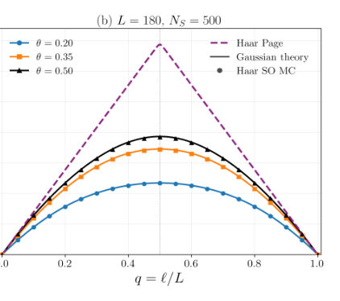
<figcaption class="paper-figure-caption"><b>Fig 1.</b> Figure 1. Stationary gaussian Page curves for NS = 500 Haar samples at L = 80, left panel, and L = 180 for the right panel. The numerical Haar–SO(L) data (dots) are compared with the Coulomb-gas prediction (bold curves) Eq. (42). Both panels also show the fully Haar-random non-gaussian reference used in the numerical study, emphasizing that gaussian scrambling produces a distinct, θ-dependent family of Page curves.</figcaption>
</figure>
<figure class="paper-figure-card">
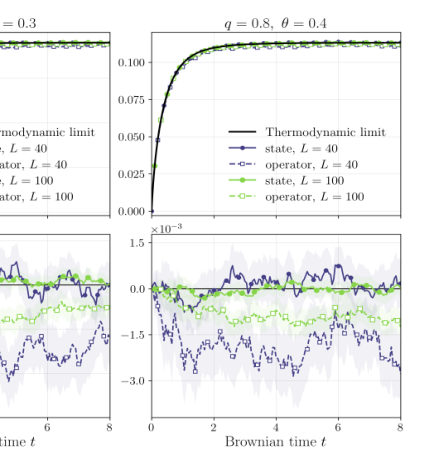
<figcaption class="paper-figure-caption"><b>Fig 2.</b> Figure 2. Numerical comparison of the real (β = 1) operator Jacobi dynamics and the complex (β = 2) state Jacobi dynamics with the common thermodynamic limit, for the balanced bipartition q = θ = 1/2 (left), q = 0.6, θ = 0.3 (middle), q = 0.8, θ = 0.4 (right). Circles denote the state entanglement obtained from complex random-unitary evolution of a DW state, while squares denote the OSEE generated by the gaussian evolution of a Majorana string. Lower row: finite size deviations of the entropy-density dynamics; the black curve is the thermodynamic prediction Eqs. (62, 69) .</figcaption>
</figure>
</div>

<p><strong>Summary.</strong> This paper calculates the Operator-Space Entanglement Entropy (OSEE) for fermions evolving under random Gaussian dynamics modeled by a Brownian SYK2 Hamiltonian. By mapping the problem to a domain-wall melting problem and employing Random Matrix Theory, the authors derive an exact, analytic formula for the time-dependent OSEE. This work provides a rigorous tool to characterize entanglement dynamics in complex, non-equilibrium quantum systems.</p>
<p><strong>Why it may be interesting.</strong> The connection between entanglement measures (OSEE) and integrable/chaotic dynamics, coupled with the use of advanced RMT techniques, provides powerful tools for analyzing non-equilibrium quantum many-body systems.</p>
<details>
<summary>Detailed structure</summary>
<p><strong>Main problem.</strong> The study focuses on deriving and characterizing the time-dependent von Neumann operator-space entanglement entropy (OSEE) for initial product operators evolving under random Gaussian dynamics.</p>
<p><strong>Main result.</strong> The authors derived an exact, analytic expression for the time-dependent bipartite OSEE in the thermodynamic limit and characterized the emerging Gaussian Page curve.</p>
<p><strong>Method.</strong> The analysis employs advanced tools from Random Matrix Theory (RMT), including the Coulomb-gas approach and mapping the problem to a domain-wall melting problem, leading to solutions expressed via the resolvent function.</p>
<p><strong>Model / system.</strong> The system is modeled by fermionic dynamics governed by a Brownian SYK2 model, involving Majorana strings and random Gaussian evolution.</p>
<p><strong>Key observables.</strong> Operator-Space Entanglement Entropy (OSEE), $  ext{Sop}(\ell)$, and the corresponding Gaussian Page curve.</p>
<p><strong>Important parameters / regimes.</strong> The thermodynamic limit ($L 	o \infty$), and the time evolution parameter $t$.</p>
<p><strong>Assumptions / limitations.</strong> The initial state is assumed to be unentangled (a product of local Majorana operators).</p>
<p><strong>Figures summary.</strong> Not specified (The notes mention equations and mathematical derivations rather than figure content).</p>
<p><strong>Paper structure.</strong> The paper progresses by defining the OSEE, mapping the dynamics to a solvable problem (domain-wall melting), utilizing RMT techniques (moment evolution, resolvent formulation), and finally deriving the exact quadrature expression for the entropy.</p>
</details>
<details>
<summary>Abstract</summary>
<p>We study the von Neumann operator-space entanglement entropy (OSEE) of initial product operators evolved under random gaussian dynamics, as modeled by a Brownian SYK$_2$ model. By exploiting a mapping to a domain-wall melting problem, we derive an exact expression for the time-dependent bipartite OSEE in the thermodynamic limit, and obtain an analytic characterization of the corresponding gaussian Page curve emerging at late times. Our results build on recent work on the entanglement dynamics in the all-to-all quantum simple exclusion process, leveraging tools from RMT, including the Coulomb-gas approach and a mapping to the free Jacobi process. Finally, based on our results, we discuss the possibility of relating the OSEE with non-gaussianity measures in the Heisenberg picture.</p>
</details>
<p><sub><a href="#top">↑ back to top</a></sub></p>

<p><a id="paper-2610.21209"></a></p>
<h3 id="plasmon-collapse-in-a-directional-strange-metal"><a href="http://arxiv.org/abs/2610.21209v1">Plasmon Collapse in a Directional Strange Metal</a></h3>
<p><strong>Authors:</strong> Jiade Li, Peiyi He, Deng Hu, Jiakai Wang, Jifeng Shao, Wan-Shun Du, Xuetao Zhu, Jiandong Guo, Zhiwei Wang, Peng Gao<br>
<strong>Type:</strong> experiment · <strong>Category:</strong> strongly correlated electrons · <strong>PDF:</strong> <a href="https://arxiv.org/pdf/2610.21209v1">https://arxiv.org/pdf/2610.21209v1</a><br>
<strong>Analysis basis:</strong> full PDF text, analyzed in chunks
<strong>Topic relevance:</strong> <code>Keldysh / 2PI / non-Gaussian methods</code> <strong>1/5</strong> · <code>correlated / nonlocal dissipation</code> <strong>1/5</strong></p>
<div class="figure-strip-hint">↔ Scroll figures horizontally</div>
<div class="paper-figures-scroll">
<figure class="paper-figure-card">
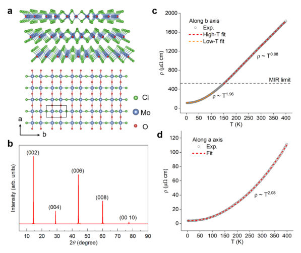
<figcaption class="paper-figure-caption"><b>Fig 1.</b> Fig. 1 | Orthogonal electronic dichotomy in MoOCl2. a, Crystal structure of MoOCl2 viewed from different crystallographic directions, showing the van der Waals layered structure and the orthogonal in- plane axes. The crystal structure is visualized using VESTA (ref.46). b, X-ray diffraction pattern of a representative crystal. c, Temperature-dependent resistivity along the b-axis. Fits to 𝜌𝜌= 𝜌𝜌0 + 𝐴𝐴𝑇𝑇𝑛𝑛 reveal a crossover from a low-temperature nearly quadratic dependence (𝑛𝑛= 1.96 ) to an extended high- temperature nearly linear-in-T regime (𝑛𝑛= 0.98 ), characteristic of strange metal transport. The grey dashed line marks the calculated MIR resistivity limit. d, Temperature-dependent...</figcaption>
</figure>
<figure class="paper-figure-card">
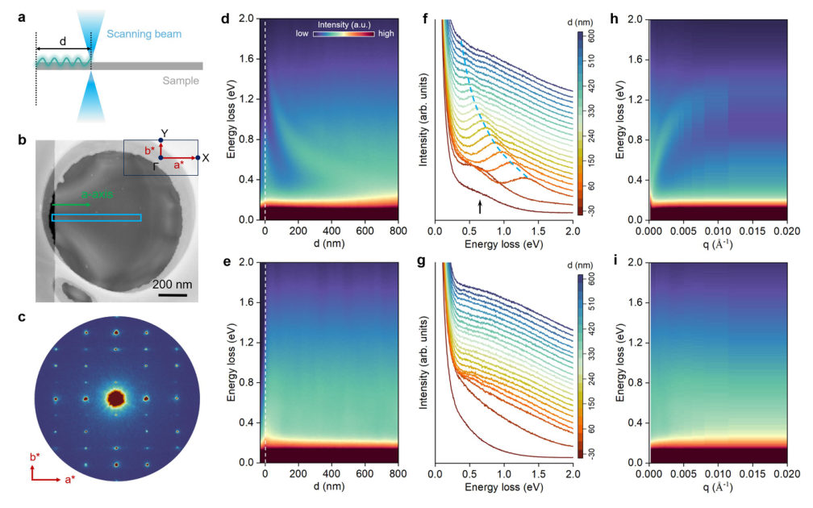
<figcaption class="paper-figure-caption"><b>Fig 2.</b> Fig. 2 | Direction-selective propagation of plasmon polaritons. a, Schematic of the edge-scanning geometry. The electron beam is scanned perpendicular to the sample edge at a distance 𝑑𝑑. b, Real-space image of an 8-layer MoOCl2 flake showing the electron-probe scan region (marked by the light blue rectangle) near the flake edge. Inset: schematic Brillouin zone indicating the reciprocal a* and b* directions. c, Electron diffraction pattern used to determine the crystallographic orientation of the flake and identify the corresponding real-space a- and b-oriented edges. d, e, Energy-loss intensity maps measured as a function of distance 𝑑𝑑 from the edge (𝑑𝑑= 0, marked by the white dashed...</figcaption>
</figure>
<figure class="paper-figure-card">
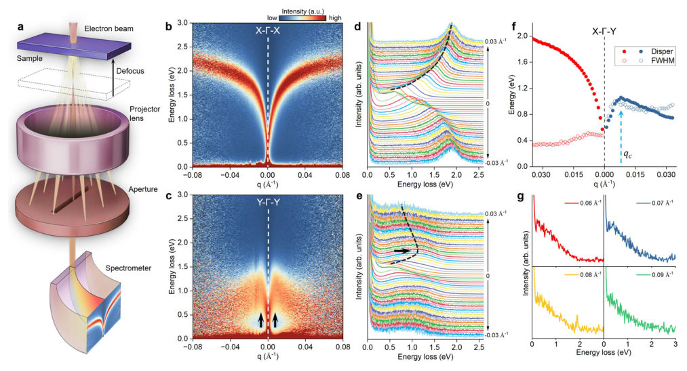
<figcaption class="paper-figure-caption"><b>Fig 3.</b> Fig. 3 | Directional evolution and collapse of plasmons in the long-wavelength regime. a, Schematic of the defocus-engineered configuration used to measure long-wavelength charge excitations with high momentum resolution. b, c, Energy-momentum EELS maps measured from an 8-layer MoOCl2 flake along the X-Γ-X and Y-Γ-Y directions, corresponding to the Fermi liquid and strange metal directions, respectively. A well-defined plasmon branch with positive dispersion is clearly observed along the X-Γ- X direction, whereas the spectral peak rapidly broadens and loses its pole-like character along the Y-Γ-Y direction. d, e, Stacked EDCs extracted from b and c, respectively. The black dashed lines are...</figcaption>
</figure>
<figure class="paper-figure-card">
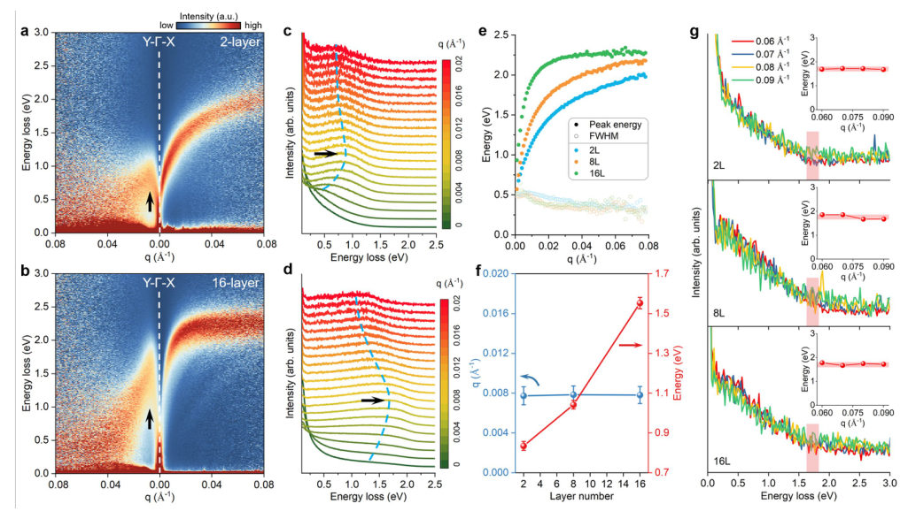
<figcaption class="paper-figure-caption"><b>Fig 4.</b> Fig. 4 | Intrinsic scales of incoherent charge dynamics revealed by thickness-dependent measurements. a, b, Energy-momentum EELS maps measured along the Y-Γ-X path for 2-layer and 16- layer MoOCl2 flakes. c, d, Stacked EDCs along the Γ-Y direction extracted from a and b, respectively. The blue dashed lines are guides to the eye, while the black arrows mark the critical momentum point where the dispersion bends back. e, Extracted plasmon dispersion and FWHM along the Γ-X direction for 2-layer, 8-layer and 16-layer MoOCl2. f, Thickness dependence of 𝑞𝑞𝑐𝑐 (blue spheres, left axis) and the peak energy of the charge excitations at 𝑞𝑞𝑐𝑐 (red spheres, right axis) along the Γ-Y direction. 𝑞𝑞𝑐𝑐...</figcaption>
</figure>
</div>

<p><strong>Summary.</strong> This paper investigates charge dynamics in the strange metal $ ext{MoOCl}_2$ by comparing two orthogonal in-plane directions. It reveals that while one direction supports a well-defined plasmon, the other shows the plasmon collapsing into a featureless continuum. This establishes intrinsic energy and momentum scales that govern the incoherent electronic fluid, providing a unique test case for theories beyond the quasiparticle paradigm.</p>
<p><strong>Why it may be interesting.</strong> The work provides a direct experimental platform to distinguish between coherent (quasiparticle-like) and incoherent charge dynamics in a strongly correlated material, offering insights into how collective excitations behave when the system deviates significantly from simple Fermi liquid theory.</p>
<details>
<summary>Detailed structure</summary>
<p><strong>Main problem.</strong> The paper addresses the fundamental unresolved question of charge dynamics in strange metals: whether well-defined collective modes survive in an incoherent electronic fluid or dissolve into overdamped continua.</p>
<p><strong>Main result.</strong> The study demonstrates a striking dichotomy in $   ext{MoOCl}_2$, where one crystallographic direction supports a coherent plasmon (Fermi liquid behavior), while the orthogonal direction shows the plasmon collapsing into a featureless continuum bounded by an intrinsic energy scale ($E_c$).</p>
<p><strong>Method.</strong> The research combines high-momentum-resolution inelastic electron scattering (STEM-EELS) with direction-resolved transport measurements on $    ext{MoOCl}_2$ thin flakes.</p>
<p><strong>Model / system.</strong> The physical system is the van der Waals compound $ ext{MoOCl}_2$, which acts as a platform exhibiting coexisting, orthogonal electronic states—one behaving as a Fermi liquid and the other as a strange metal.</p>
<p><strong>Key observables.</strong> Plasmon dispersion, resistivity ($
ho$) vs. Temperature ($T$), critical momentum ($q_c$), and high-energy cutoff ($E_c$).</p>
<p><strong>Important parameters / regimes.</strong> The intrinsic scales $q_c \approx 0.008 \mathring{\mathrm{A}}^{-1}$ and $E_c \approx 1.75 	ext{ eV}$ are shown to be robust against changes in Coulomb screening (thickness).</p>
<p><strong>Assumptions / limitations.</strong> The analysis relies on the ability to separate and compare charge dynamics along two orthogonal in-plane crystallographic axes, allowing for a direct comparison beyond the standard quasiparticle picture.</p>
<p><strong>Figures summary.</strong> Figures illustrate the orthogonal electronic dichotomy via resistivity measurements and map the directional evolution of plasmon polaritons using STEM-EELS, showing clear propagation along one axis and collapse along the other.</p>
<p><strong>Paper structure.</strong> The paper establishes the problem by noting the strange metal debate, presents the experimental setup using $  ext{MoOCl}_2$, details the orthogonal dichotomy observed in both transport and charge response, and concludes by identifying the intrinsic, robust scales governing the incoherent continuum.</p>
</details>
<details>
<summary>Abstract</summary>
<p>Strange metals are widespread in strongly correlated quantum matter and closely intertwined with high-temperature superconductivity and quantum criticality, yet their microscopic charge dynamics remain fundamentally unresolved. Whether well-defined collective modes survive in an incoherent electronic fluid or dissolve into overdamped continua remains intensely debated. Here, employing high-momentum-resolution inelastic electron scattering complemented by direction-resolved transport, we show that the van der Waals compound $\mathrm{MoOCl}_2$, a "bad" metal known to host unusually "good" plasmons, exhibits a striking dichotomy in electronic coherence and charge dynamics. Transport reveals coherent Fermi liquid behavior along one in-plane crystallographic axis and an incoherent strange metal response along the orthogonal axis. This dichotomy extends directly to the charge response. The Fermi liquid direction supports a well-defined, long-lived plasmon, whereas the strange metal direction exhibits an overdamped excitation that progressively loses its collective character with increasing momentum. Beyond a critical momentum ($q_c$ $\approx$ 0.008 $\mathring{\mathrm{A}}^{-1}$), the mode undergoes a reversal into negative dispersion and ultimately collapses into a broad, nearly featureless continuum with a robust high-energy boundary ($E_c$ $\approx$ 1.75 eV). Remarkably, thickness-dependent measurements show that both $q_c$ and $E_c$ remain nearly unchanged despite substantial modifications of Coulomb screening, revealing them as intrinsic scales of incoherent charge density fluctuations. These results establish a unique single-material platform in which coherent and incoherent electronic states are partitioned into in-plane orthogonal channels, and demonstrate that incoherent electronic fluids retain intrinsically structured charge dynamics beyond the quasiparticle paradigm.</p>
</details>
<p><sub><a href="#top">↑ back to top</a></sub></p>

<p><a id="paper-2610.21712"></a></p>
<h3 id="size-dependent-high-order-harmonic-generation-from-linear-carbon-chain-molecules-in-linearly-polarized-laser-fields"><a href="http://arxiv.org/abs/2610.21712v1">Size-Dependent High-Order Harmonic Generation from Linear Carbon-Chain Molecules in Linearly Polarized Laser Fields</a></h3>
<p><strong>Authors:</strong> Yifan Kang, Yang Yang, Yingtan Li, Shuwen Pang, Huiwen Yang, Yingdan Zhang, Shushan Zhou<br>
<strong>Type:</strong> theory · <strong>Category:</strong> other · <strong>PDF:</strong> <a href="https://arxiv.org/pdf/2610.21712v1">https://arxiv.org/pdf/2610.21712v1</a><br>
<strong>Analysis basis:</strong> full PDF text, analyzed in chunks
<strong>Topic relevance:</strong> <code>Keldysh / 2PI / non-Gaussian methods</code> <strong>1/5</strong> · <code>interference shaping light</code> <strong>1/5</strong></p>
<div class="figure-strip-hint">↔ Scroll figures horizontally</div>
<div class="paper-figures-scroll">
<figure class="paper-figure-card">
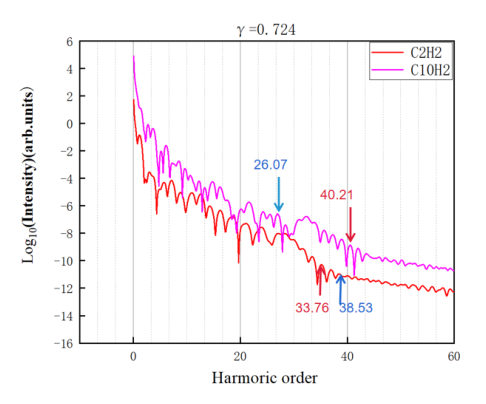
<figcaption class="paper-figure-caption"><b>Fig 1.</b> FIG. 2. HHG spectra of C2H2 and C10H2 driven by an 800 nm linearly polarized laser field. The molecular axis is parallel to the laser polarization direction, as shown in Fig. 1. The electric-field amplitude is 0.057 a.u. for C10H2 and 0.073 a.u. for C2H2, corresponding to the same Keldysh parameter γ = 0.724. The laser pulse has a trapezoidal envelope with a one-cycle ramp-on, a four-cycle plateau, and a one-cycle ramp-off.</figcaption>
</figure>
<figure class="paper-figure-card">
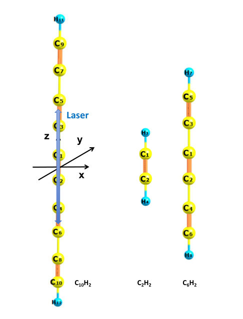
<figcaption class="paper-figure-caption"><b>Fig 2.</b> FIG. 1. Schematic illustration of the molecular orientation with respect to the linearly polarized laser field. The molec- ular axes of C2H2, C6H2, and C10H2 are aligned along the z axis, parallel to the laser polarization direction. The molecu- lar lengths are 3.15 a.u., 8.01 a.u., and 12.87 a.u., respectively.</figcaption>
</figure>
<figure class="paper-figure-card">
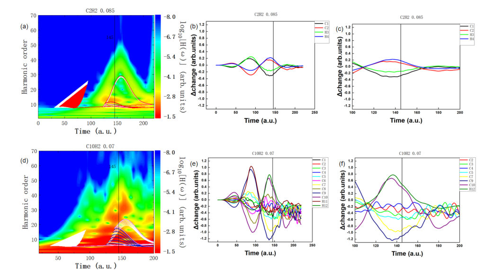
<figcaption class="paper-figure-caption"><b>Fig 3.</b> FIG. 3. Time-frequency analysis and charge-density evolution for C2H2 and C10H2. (a,b) HHG spectra and directional components. (c,d) Time-frequency distributions of the HHG spectra, where the dashed lines mark the main harmonic emission times. (e,f) Time-dependent charge variation around representative atomic centers. The stronger charge oscillations near the terminal carbon atoms of C10H2 indicate enhanced electron localization and multi-center recollision in the longer molecule.</figcaption>
</figure>
<figure class="paper-figure-card">
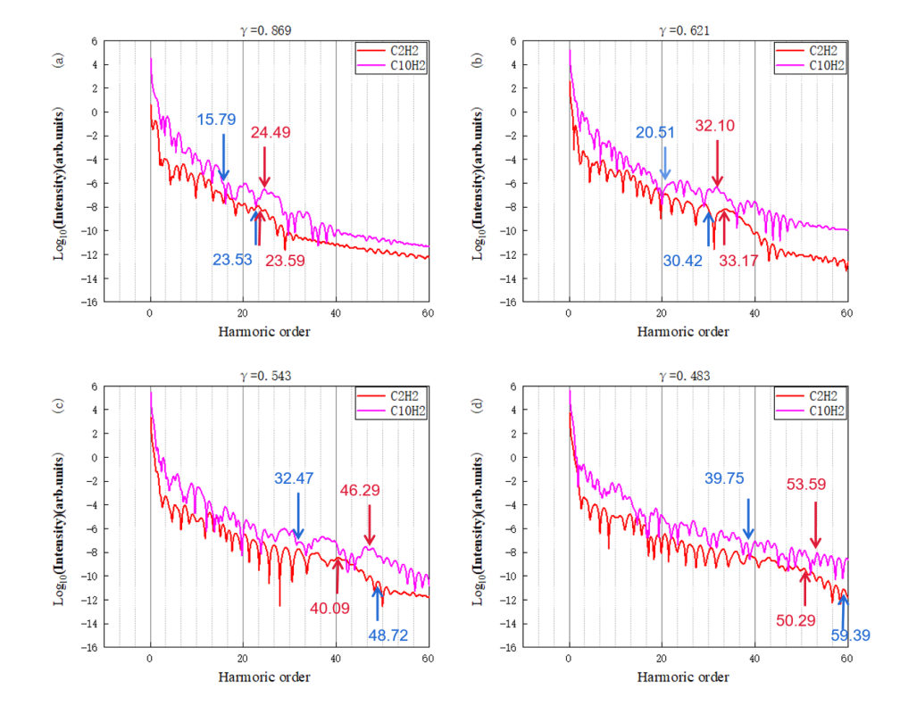
<figcaption class="paper-figure-caption"><b>Fig 4.</b> FIG. 4. HHG spectra of C2H2 and C10H2 under linearly polarized laser fields with different intensities. For each panel, the laser amplitudes are chosen to maintain the same Keldysh parameter for the two molecules. The results show that the harmonic yield of C10H2 becomes increasingly stronger than that of C2H2 as the field strength increases.</figcaption>
</figure>
<figure class="paper-figure-card">
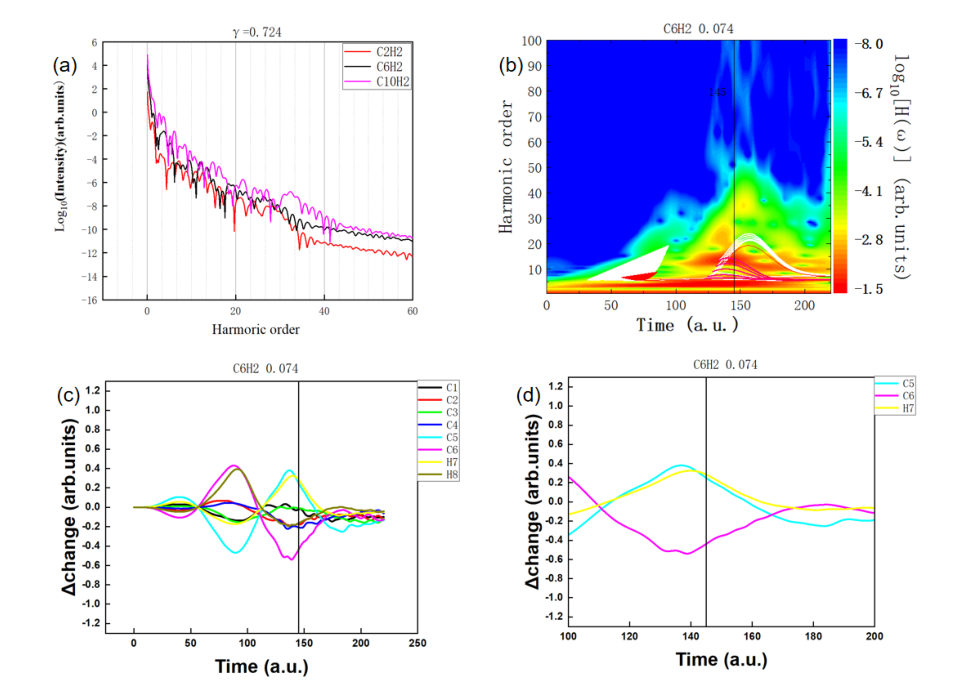
<figcaption class="paper-figure-caption"><b>Fig 5.</b> FIG. 5. (a) Comparison of HHG spectra from C2H2, C6H2, and C10H2 under the same Keldysh parameter. (b) Time- frequency analysis of HHG from C6H2, where the dashed line marks the main harmonic emission time. (c) Time-dependent charge variation around representative atomic centers in C6H2 near the main emission time. The results show that the harmonic yield increases with molecular chain length and that terminal carbon atoms contribute strongly to the enhanced emission.</figcaption>
</figure>
</div>

<p><strong>Summary.</strong> This paper uses TDDFT simulations to study High-Order Harmonic Generation (HHG) in linear carbon chains of varying lengths. The key finding is that increasing the molecular size significantly boosts harmonic emission, extending the plateau region. This effect is explained by enhanced electron dynamics, such as increased recollision probability, offering a route for molecular-size engineering of attosecond light sources.</p>
<p><strong>Why it may be interesting.</strong> This work directly addresses molecular physics and strong-field quantum optics by demonstrating a controllable, size-dependent mechanism for enhancing attosecond light sources in extended molecular systems.</p>
<details>
<summary>Detailed structure</summary>
<p><strong>Main problem.</strong> The study investigates how the physical size (chain length) of linear carbon molecules affects the efficiency and spectral characteristics of High-Order Harmonic Generation (HHG).</p>
<p><strong>Main result.</strong> Increasing the molecular chain length significantly enhances the harmonic yield and extends the cutoff region, which is attributed to increased electron acceleration distance and multi-center recollision.</p>
<p><strong>Method.</strong> The research employs real-time Time-Dependent Density Functional Theory (TDDFT) simulations to model the strong-field electron dynamics.</p>
<p><strong>Model / system.</strong> The system consists of linear carbon-chain molecules ($ ext{C}<em 10>2    ext{H}_2$, $    ext{C}_6    ext{H}_2$, $    ext{C}</em>_2$) aligned parallel to a linearly polarized 800 nm laser field. The simulations are carefully controlled by adjusting laser intensities to maintain a constant Keldysh parameter across different molecules.} ext{H</p>
<p><strong>Key observables.</strong> High-Order Harmonic Generation (HHG) spectra (harmonic yield and cutoff region), time-frequency analysis, and charge-density evolution.</p>
<p><strong>Important parameters / regimes.</strong> Laser wavelength (800 nm), Keldysh parameter ($\gamma$), and molecular chain length.</p>
<p><strong>Assumptions / limitations.</strong> The comparison isolates the molecular-size effect by keeping the Keldysh parameter constant, thereby minimizing the influence of variations in ionization potentials.</p>
<p><strong>Figures summary.</strong> Figures compare HHG spectra for different chain lengths ($ ext{C}<em 10>2    ext{H}_2$ vs $  ext{C}</em>_2$), show the size-dependent enhancement, and analyze charge-density evolution revealing enhanced dynamics in longer chains.} ext{H</p>
<p><strong>Paper structure.</strong> The paper systematically investigates the size dependence of HHG, presenting results comparing multiple chain lengths under controlled laser parameters, and interpreting the physical origin of the enhancement via time-domain analysis.</p>
</details>
<details>
<summary>Abstract</summary>
<p>High-order harmonic generation from molecules is highly sensitive to molecular geometry and strong-field electron dynamics, providing a powerful route for probing and controlling ultrafast processes in extended systems. In this work, we systematically investigate the influence of molecular chain length on HHG from linear carbon-chain molecules C$_2$H$_2$, C$_6$H$_2$, and C$_{10}$H$_2$ driven by an 800 nm linearly polarized laser field. To isolate the molecular-size effect from the influence of different ionization potentials, the laser intensities are adjusted to maintain the same Keldysh parameter for different molecules. Real-time time-dependent density functional theory simulations are performed with the molecular axis aligned parallel to the laser polarization direction. The results show that increasing the molecular chain length significantly enhances the harmonic yield and tends to extend the cutoff region. In particular, C$_{10}$H$_2$ exhibits much stronger plateau harmonics than C$_2$H$_2$, while the intermediate molecule C$_6$H$_2$ shows harmonic intensities between those of C$_2$H$_2$ and C$_{10}$H$_2$. Time-frequency analysis and charge-density evolution reveal that the enhanced HHG emission in longer chains originates from the enlarged electron acceleration distance and increased probability of multi-center recollision, especially near the terminal carbon atoms. These findings demonstrate that molecular-size engineering offers an effective strategy for controlling harmonic emission and optimizing attosecond light sources in extended molecular systems.</p>
</details>
<p><sub><a href="#top">↑ back to top</a></sub></p>

<p><a id="paper-2610.20737"></a></p>
<h3 id="a-constructive-solution-to-the-math755math-representability-problem"><a href="http://arxiv.org/abs/2610.20737v1">A constructive solution to the $n$-representability problem</a></h3>
<p><strong>Authors:</strong> Nicholas C. Rubin, A. Eugene DePrince<br>
<strong>Type:</strong> theory · <strong>Category:</strong> strongly correlated electrons · <strong>PDF:</strong> <a href="https://arxiv.org/pdf/2610.20737v1">https://arxiv.org/pdf/2610.20737v1</a><br>
<strong>Analysis basis:</strong> full PDF text, analyzed in chunks
<strong>Topic relevance:</strong> <code>analog quantum simulation</code> <strong>1/5</strong></p>
<div class="figure-strip-hint">↔ Scroll figures horizontally</div>
<div class="paper-figures-scroll">
<figure class="paper-figure-card">
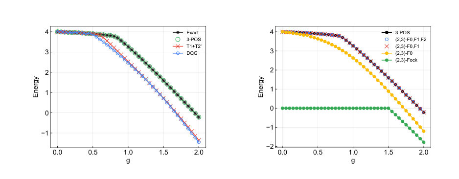
<figcaption class="paper-figure-caption"><b>Fig 1.</b> FIG. 1. left) Comparison of the exact ground state energy for spinless Richardson Hamiltonian (Eq. (114)) in the 3-electron subspace as a function of interaction strength g and various v2RDM methods. 3-POS corresponds with Σ3 witnesses and is exact for 3-electron systems as we are optimizing over the full 3-electron density matrix. DQG corresponds to Σ2 while T1+T2′ corresponds to subcone of Σ3,≤2 conditions constructed by anticommutation relation cancellation alone. Here Σ2 and Σ3 identify the SOS positivity structure; the fixed-three-electron RDM calculations also include the particle-number and RDM consistency constraints. right) Comparison of the exact ground state energy for the...</figcaption>
</figure>
</div>

<p><strong>Summary.</strong> This paper provides a constructive, algebraic solution to the challenging $n$-representability problem in fermionic quantum systems. By systematically constructing a complete set of two-body witnesses using weighted sum-of-squares hierarchies, the authors offer a powerful tool to verify the physical validity of candidate reduced density matrices. This advances the theoretical understanding of many-body quantum simulations.</p>
<p><strong>Why it may be interesting.</strong> The rigorous algebraic framework for verifying physical constraints on reduced density matrices is fundamental to accurately simulating strongly correlated electron systems where approximations often fail.</p>
<details>
<summary>Detailed structure</summary>
<p><strong>Main problem.</strong> The paper addresses the $n$-representability problem, which is determining the physical constraints on two-particle reduced density matrices (2-RDM) derived from an $n$-fermion state.</p>
<p><strong>Main result.</strong> The authors establish a unified, constructive algebraic framework using weighted sum-of-squares (SOS) hierarchies to systematically verify the physicality of candidate 2-RDMs.</p>
<p><strong>Method.</strong> They construct a complete family of two-body witnesses by combining positive-semidefinite Gram matrices with explicit linear nullspace constraints derived from the canonical anticommutation relations.</p>
<p><strong>Model / system.</strong> The theory applies to fermionic quantum systems, relevant for quantum chemistry and condensed matter simulations, and is tested using the Richardson Hamiltonian in the three-fermion sector.</p>
<p><strong>Key observables.</strong> Two-particle reduced density matrices (2-RDM), ground-state energy, and the set of two-body witnesses.</p>
<p><strong>Important parameters / regimes.</strong> The degree of the SOS hierarchy ($d$), the number of fermions ($n$), and the specific Hamiltonian structure (e.g., Richardson).</p>
<p><strong>Assumptions / limitations.</strong> The initial SOS argument only required non-negativity on the fixed-$n$ subspace, and the constructed set $\Sigma_{d, \le 2}$ is noted to be incomplete for fixed-particle simulations.</p>
<p><strong>Figures summary.</strong> TABLE I summarizes quadratic-generator Gram blocks resolved by changes in particle number and spin projection, detailing the structure of these blocks.</p>
<p><strong>Paper structure.</strong> The paper develops from defining the $n$-representability problem, constructing the SOS hierarchy using Gram matrices and nullspace constraints, proving the equivalence between the SOS representation and the nullspace conditions, and finally applying this framework to derive energy bounds.</p>
</details>
<details>
<summary>Abstract</summary>
<p>We present a solution to the fermionic quantum marginal problem by constructing the complete family of two-body witnesses at each level of a weighted sum-of-squares hierarchy. Our construction combines positive-semidefinite Gram matrices with explicit linear nullspace constraints that exactly cancel all higher-body contributions, replacing the search for individual representability conditions with a systematic algebraic procedure. Beyond the completeness proof, we demonstrate the construction numerically by solving the associated semidefinite program and recovering the exact ground-state energy of a Richardson Hamiltonian in the three-fermion sector. We further prove that higher-degree particle-number multipliers are unnecessary when the full sum-of-squares generating algebra is used. These results establish a unified constructive framework for verifying the physicality of a candidate two-particle reduced density matrix through a complete characterization of all two-body witnesses.</p>
</details>
<p><sub><a href="#top">↑ back to top</a></sub></p>

<p><a id="paper-2610.20717"></a></p>
<h3 id="all-temperature-superfluidity-in-two-dimensions"><a href="http://arxiv.org/abs/2610.20717v1">All-temperature superfluidity in two dimensions</a></h3>
<p><strong>Authors:</strong> Bilal Hawashin, Soumyadeep Chaudhuri, Igor F. Herbut, Michael M. Scherer<br>
<strong>Type:</strong> theory · <strong>Category:</strong> statistical mechanics · <strong>PDF:</strong> <a href="https://arxiv.org/pdf/2610.20717v1">https://arxiv.org/pdf/2610.20717v1</a><br>
<strong>Analysis basis:</strong> full PDF text, analyzed in chunks
<strong>Topic relevance:</strong> <code>Keldysh / 2PI / non-Gaussian methods</code> <strong>1/5</strong></p>
<div class="figure-strip-hint">↔ Scroll figures horizontally</div>
<div class="paper-figures-scroll">
<figure class="paper-figure-card">
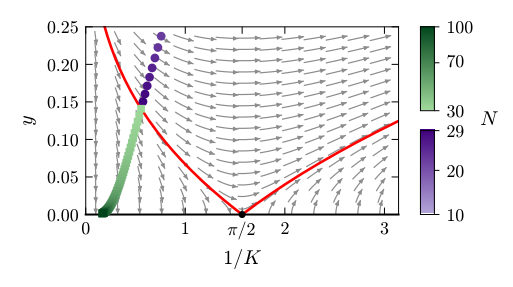
<figcaption class="paper-figure-caption"><b>Fig 1.</b> FIG. 1. Kosterlitz–Thouless renormalization-group flow of 1/K, with K = βρs, and the vortex fugacity y of the effective action (26). Initial conditions below the separatrix (red) flow to the line of Gaussian fixed points (y = 0, 1/K &lt; π/2), where vortices are irrelevant; those above flow to large y, where vor- tices proliferate. The separatrix ends at the BKT transition, 1/K = π/2. Symbols (colored by N) show the matching value of K and the upper bound on y at a ∼1/T for the biconical fixed point at leading order in 1/N. For sufficiently large N, they lie deep in the region where the theory flows to a Gaus- sian theory with quasi-long-range order for |x| ≫1/T.</figcaption>
</figure>
<figure class="paper-figure-card">
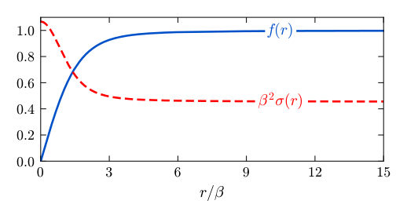
<figcaption class="paper-figure-caption"><b>Fig 2.</b> FIG. 2. Numerical solutions of f(r) and σ(r) for the unit- vortex saddle in Eq. (35). For large r, it is evident that ¯ψ and σ approach their respective homogeneous saddle values in Eq. (19).</figcaption>
</figure>
</div>

<p><strong>Summary.</strong> This theoretical work proves that superfluidity can persist to arbitrarily high temperatures in a 2D quantum field theory, overcoming limitations predicted by standard theorems. The authors use a large-$N$ expansion and RG analysis to show that vortex excitations are exponentially suppressed. This confirms the existence of a BKT phase across all temperatures for the modeled system.</p>
<p><strong>Why it may be interesting.</strong> The result provides a rigorous, non-perturbative demonstration of high-temperature superfluidity in 2D systems, which is a cornerstone problem in condensed matter theory relevant to superfluid Helium or 2D electron gases.</p>
<details>
<summary>Detailed structure</summary>
<p><strong>Main problem.</strong> The paper investigates the persistence of superfluidity (quasi-long-range order) at arbitrarily high temperatures in two dimensions, challenging limitations imposed by theorems like the Mermin-Wagner theorem.</p>
<p><strong>Main result.</strong> The authors show that by analyzing a specific quantum field theory at its biconical fixed point, the vortex fugacity is exponentially suppressed in the large-$N$ limit, confirming the existence of a Berezinskii-Kosterlitz-Thouless (BKT) phase at all temperatures.</p>
<p><strong>Method.</strong> The analysis employs the large-$N$ expansion, renormalization group (RG) techniques, and saddle-point calculations to determine the effective action for the phase mode and the vortex excitations.</p>
<p><strong>Model / system.</strong> The system is a $(2+1)$-dimensional quantum field theory with global $O(N) 	imes U(1)$ symmetry, studied via a large-$N$ expansion involving fields $\phi, \psi, \sigma$.</p>
<p><strong>Key observables.</strong> Phase stiffness ($
ho_s$), vortex fugacity ($y$), and the effective potential minima.</p>
<p><strong>Important parameters / regimes.</strong> Temperature ($T=1/eta$), large $N$, and the coupling constants at the biconical fixed point.</p>
<p><strong>Assumptions / limitations.</strong> The validity of the large-$N$ expansion and the ability to define the vortex core action using a short-distance cutoff $a \sim 1/T$.</p>
<p><strong>Figures summary.</strong> Figure 1 illustrates the Kosterlitz-Thouless transition context; Figure 2 shows numerical solutions for the vortex saddle-point profile $\sigma(r)$ and $f(r)$.</p>
<p><strong>Paper structure.</strong> The paper proceeds by setting up the large-$N$ model, identifying the relevant fixed points via RG flow, and then calculating the effective action for the phase mode and the vortex excitations to determine the thermal phase.</p>
</details>
<details>
<summary>Abstract</summary>
<p>In local theories with short-range interactions, continuous symmetries cannot be spontaneously broken in two spatial dimensions at nonzero temperature. $\mathrm{U}(1)$-symmetric models instead admit a Berezinskii--Kosterlitz--Thouless (BKT) phase with quasi-long-range order and nonzero phase stiffness, which is normally destroyed at high temperatures by vortex proliferation. Here, we show that a BKT phase, and with it superfluidity, can persist to arbitrarily high temperatures. Using the large-$N$ expansion, we study a $(2+1)$-dimensional quantum field theory in which a complex scalar is coupled to the critical $\mathrm{O}(N)$ model. At the biconical fixed point, where the inter-sector coupling is negative, the thermal effective potential has a circle of minima with nonzero $\mathrm{U}(1)$ amplitude. Integrating out the gapped fluctuations yields an effective theory for the compact phase mode at distances large compared to $1/T$. Since temperature is the only scale at the fixed point, the phase stiffness grows linearly with temperature, with a proportionality factor that scales linearly with $N$ and is fixed entirely by the fixed point. This renders vortex operators irrelevant for sufficiently large $N$. We further show that the vortex fugacity is exponentially small in $N$.</p>
</details>
<p><sub><a href="#top">↑ back to top</a></sub></p>

<p><a id="paper-2610.22205"></a></p>
<h3 id="classification-of-bipartite-observables-iii-simplicity-mixtures-and-quantum-error-correction"><a href="http://arxiv.org/abs/2610.22205v1">Classification of bipartite observables III: simplicity, mixtures and quantum error correction</a></h3>
<p><strong>Authors:</strong> Eduardo Dueñez, José Iovino<br>
<strong>Type:</strong> theory · <strong>Category:</strong> quantum information and computing · <strong>PDF:</strong> <a href="https://arxiv.org/pdf/2610.22205v1">https://arxiv.org/pdf/2610.22205v1</a><br>
<strong>Analysis basis:</strong> full PDF text, analyzed in chunks
<strong>Topic relevance:</strong> <code>quantum measurements</code> <strong>1/5</strong></p>
<div class="figure-strip-hint">↔ Scroll figures horizontally</div>
<div class="paper-figures-scroll">
<figure class="paper-figure-card">
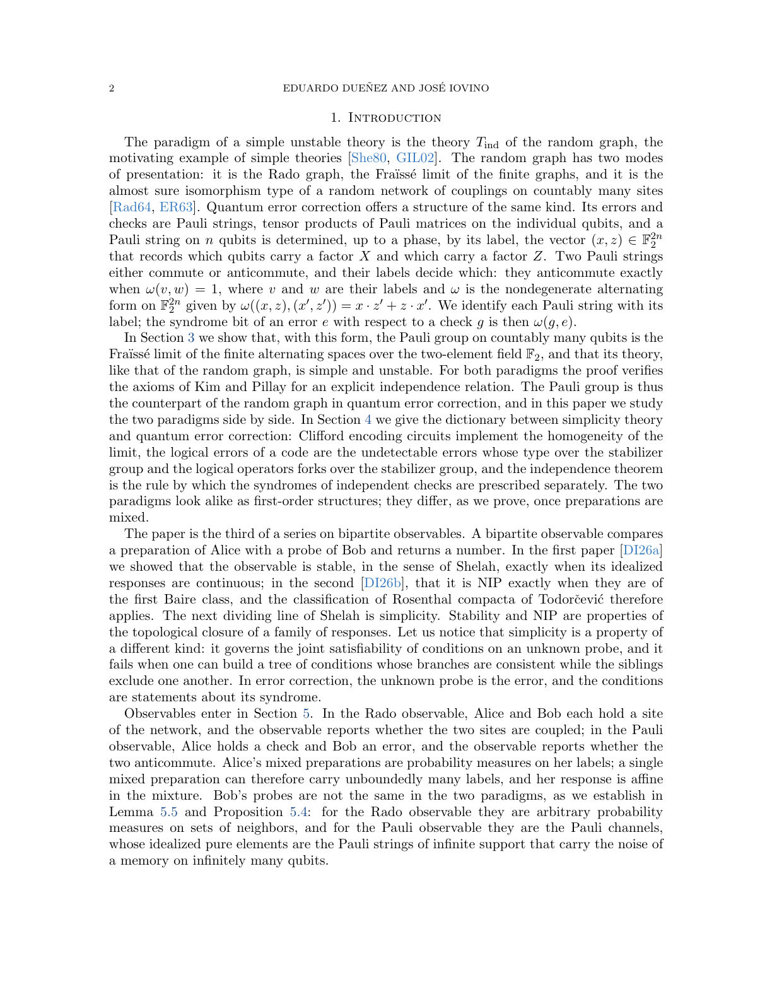
<figcaption class="paper-figure-caption"><b>Fig 1.</b> Low-resolution page preview, page 2</figcaption>
</figure>
<figure class="paper-figure-card">
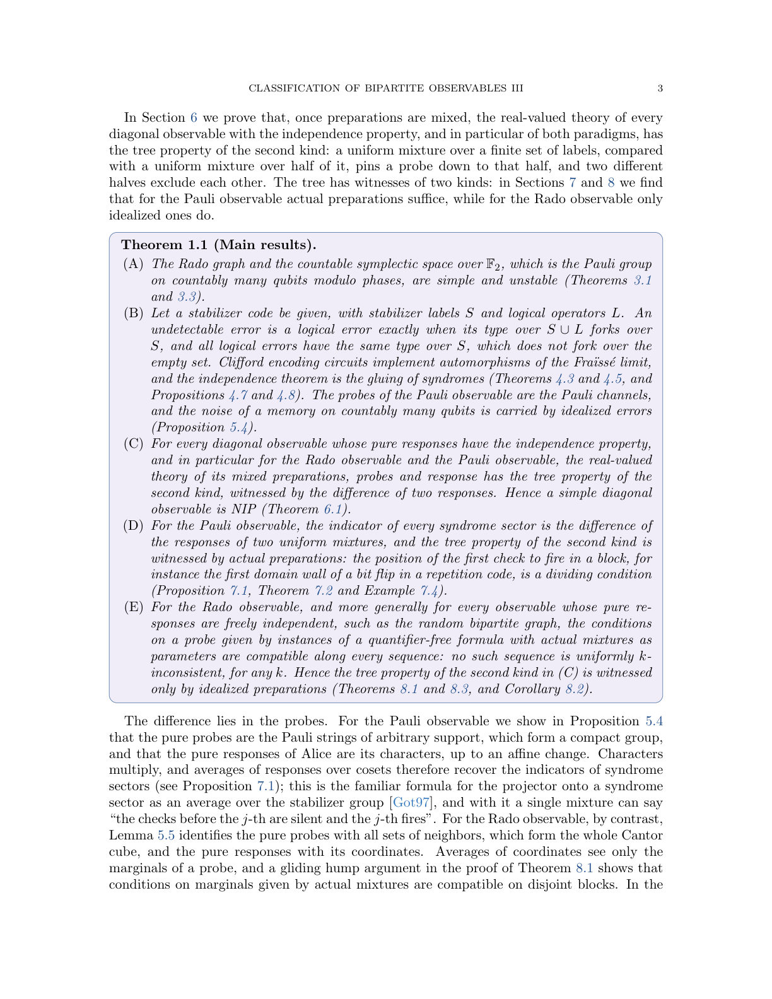
<figcaption class="paper-figure-caption"><b>Fig 2.</b> Low-resolution page preview, page 3</figcaption>
</figure>
<figure class="paper-figure-card">
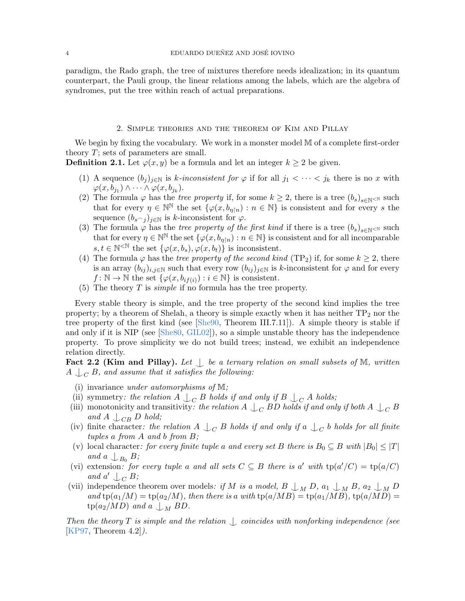
<figcaption class="paper-figure-caption"><b>Fig 3.</b> Low-resolution page preview, page 4</figcaption>
</figure>
<figure class="paper-figure-card">
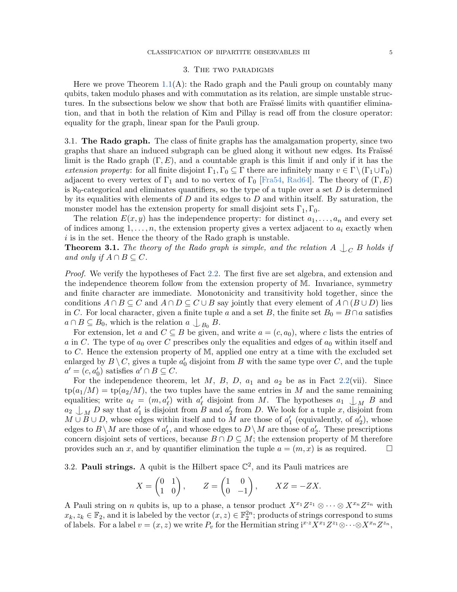
<figcaption class="paper-figure-caption"><b>Fig 4.</b> Low-resolution page preview, page 5</figcaption>
</figure>
<figure class="paper-figure-card">
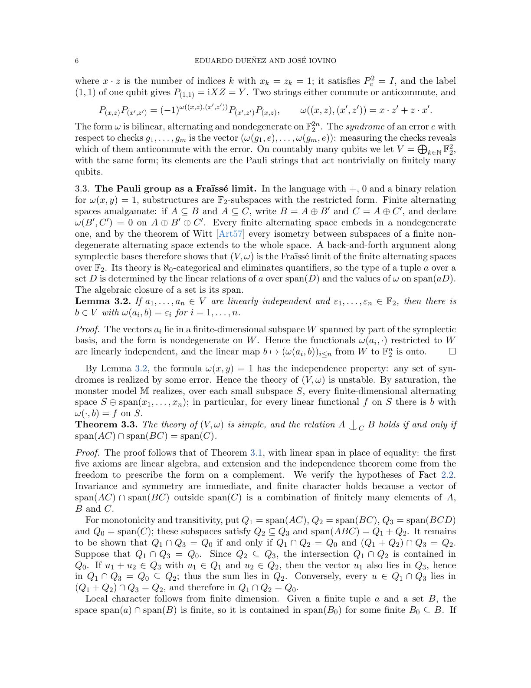
<figcaption class="paper-figure-caption"><b>Fig 5.</b> Low-resolution page preview, page 6</figcaption>
</figure>
</div>

<p><strong>Summary.</strong> This paper draws a profound analogy between the mathematical theory of 'simplicity' and the structure of Quantum Error Correction (QEC). It demonstrates that the Pauli group, which governs stabilizer codes, mirrors the mathematical structure of the random graph. The work shows that while the underlying algebraic structures are similar, the behavior of observables when quantum states are mixed reveals subtle, yet crucial, differences between the two paradigms.</p>
<p><strong>Why it may be interesting.</strong> It provides a deep, abstract mathematical framework (model theory) to classify and understand the fundamental structure of quantum error correction codes, linking abstract algebra to physical error detection.</p>
<details>
<summary>Detailed structure</summary>
<p><strong>Main problem.</strong> The paper compares the mathematical theory of model-theoretic 'simplicity' with the structure underlying Quantum Error Correction (QEC). It investigates how this correspondence holds when considering mixed quantum states.</p>
<p><strong>Main result.</strong> The Pauli group structure, central to QEC, is shown to be mathematically analogous to the random graph structure, implying that simplicity theory can be viewed as a theory of error correction.</p>
<p><strong>Method.</strong> The analysis employs advanced concepts from model theory, such as Fraïssé limits, simplicity theory, and the tree property of the second kind, applied to bipartite observables.</p>
<p><strong>Model / system.</strong> The primary models are the Pauli group on countably many qubits (related to stabilizer codes) and the random graph. The comparison is made via bipartite observables that measure interactions between preparations and probes.</p>
<p><strong>Key observables.</strong> Pauli observable (measuring anticommutation $\omega(g, e)$) and Rado observable (measuring coupling between sites).</p>
<p><strong>Important parameters / regimes.</strong> The analysis focuses heavily on the transition from pure preparations to mixed preparations, which dictates the observable's mathematical properties.</p>
<p><strong>Assumptions / limitations.</strong> The core analysis assumes the existence of a correspondence between the algebraic structure of the Pauli group and the model-theoretic properties of the random graph.</p>
<p><strong>Paper structure.</strong> The paper establishes the analogy between the Pauli group and the random graph as Fraïssé limits, then analyzes how model-theoretic concepts like simplicity and the tree property apply to the observables derived from these structures, noting where the mathematical descriptions diverge for mixed states.</p>
</details>
<details>
<summary>Abstract</summary>
<p>The paradigm of a simple unstable theory in the sense of Shelah is the theory of the random graph, the Fraïssé limit of the finite graphs. Quantum error correction has a paradigm of its own, and we show that it is the counterpart of the random graph: the Pauli group on countably many qubits, taken modulo phases and with commutation as its relation, is the Fraïssé limit of the finite alternating spaces over the two-element field, and its form computes the syndromes of stabilizer codes. Seen through this correspondence, simplicity theory turns out to be a theory of error correction. Clifford encoding circuits implement the homogeneity of the Pauli group, forking recognizes the logical errors, and the independence theorem of Kim and Pillay is the gluing of syndromes. The two paradigms look alike as first-order structures, and they part company only when observables enter. Each defines a bipartite observable, and we prove that, once preparations are mixed, both acquire the tree property of the second kind in real-valued logic. They reach it by different roads, however, and we show that the probes decide which. The probes of the Pauli observable are the Pauli channels; for them the indicator of each syndrome sector is the difference of the responses of two uniform mixtures, and actual mixtures already witness the tree. The probes of the Rado observable see only marginals; conditions given by actual mixtures remain compatible on disjoint blocks, and the tree must be sought among idealized preparations.</p>
</details>
<p><sub><a href="#top">↑ back to top</a></sub></p>

<p><a id="paper-2610.22190"></a></p>
<h3 id="connectivity-bounds-for-ghz-graphs"><a href="http://arxiv.org/abs/2610.22190v1">Connectivity Bounds for GHZ Graphs</a></h3>
<p><strong>Authors:</strong> L. Sunil Chandran, Rishikesh Gajjala<br>
<strong>Type:</strong> theory · <strong>Category:</strong> quantum information and computing · <strong>PDF:</strong> <a href="https://arxiv.org/pdf/2610.22190v1">https://arxiv.org/pdf/2610.22190v1</a><br>
<strong>Analysis basis:</strong> full PDF text, analyzed in chunks
<strong>Topic relevance:</strong> <code>analog quantum simulation</code> <strong>1/5</strong></p>
<div class="figure-strip-hint">↔ Scroll figures horizontally</div>
<div class="paper-figures-scroll">
<figure class="paper-figure-card">
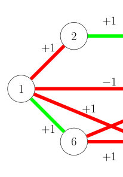
<figcaption class="paper-figure-caption"><b>Fig 1.</b> Figure 1: An edge-coloured edge-weighted graph. The edges (1, 6), (4, 5), (2, 3) are of colour green (mode number 1). Remaining edges are of colour red (mode number 0).</figcaption>
</figure>
<figure class="paper-figure-card">
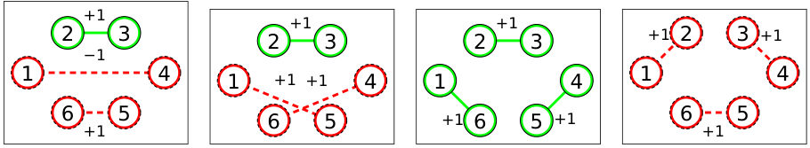
<figcaption class="paper-figure-caption"><b>Fig 2.</b> Figure 2: Inherited vertex colourings of the perfect matchings of Figure 1. Red edges and vertex outlines are dashed; green edges and outlines are solid.</figcaption>
</figure>
<figure class="paper-figure-card">
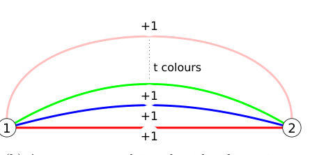
<figcaption class="paper-figure-caption"><b>Fig 3.</b> Figure 3: GHZ graphs</figcaption>
</figure>
<figure class="paper-figure-card">
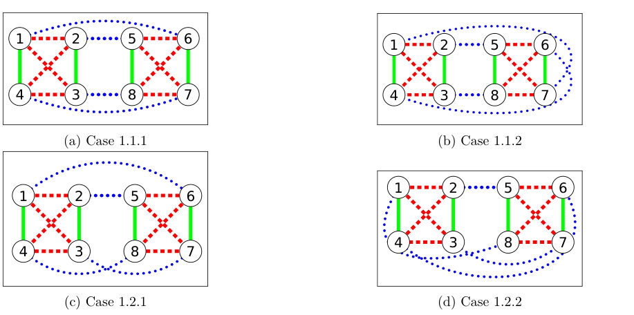
<figcaption class="paper-figure-caption"><b>Fig 4.</b> Figure 4: Case 1. Edge styles in Figures 4–7: red dashed, green solid, blue dotted, and brown dash-dotted.</figcaption>
</figure>
<figure class="paper-figure-card">
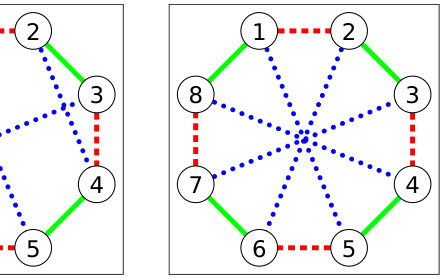
<figcaption class="paper-figure-caption"><b>Fig 5.</b> Figure 5: Case 2.1</figcaption>
</figure>
</div>

<p><strong>Summary.</strong> This paper establishes rigorous upper bounds on the dimension of GHZ states generated via quantum-optical experiments, modeling the process using edge-colored graphs. The authors prove that the dimension is bounded by a function of the graph's vertex connectivity, offering a theoretical constraint on high-dimensional entanglement generation. This advances the understanding of resource limitations in quantum information processing.</p>
<p><strong>Why it may be interesting.</strong> This work directly addresses fundamental resource limitations in quantum optics by providing rigorous mathematical bounds on the dimension of entangled states achievable in photonic systems.</p>
<details>
<summary>Detailed structure</summary>
<p><strong>Main problem.</strong> The paper aims to determine the connectivity bounds for Greenberger–Horne–Zeilinger (GHZ) graphs, which relates to the maximum achievable dimension of multipartite entangled states.</p>
<p><strong>Main result.</strong> The authors prove that every simple connected GHZ graph $G$ with at least four vertices has a dimension bounded by $2\kappa(G) - 1 + \lfloor \kappa(G)/2 
floor$.</p>
<p><strong>Method.</strong> The analysis uses graph theory, specifically examining the structure of edge-colored, edge-weighted graphs, and employs proof by contradiction by analyzing the weights of inherited vertex colorings.</p>
<p><strong>Model / system.</strong> The model is based on GHZ states realized through quantum-optical experiments using probabilistic photon sources and linear optics. The system is mathematically encoded by an edge-coloured, edge-weighted graph $G_w^c$.</p>
<p><strong>Key observables.</strong> The dimension $\mu(G, c, w)$, defined as the number of feasible monochromatic inherited vertex colourings.</p>
<p><strong>Important parameters / regimes.</strong> Vertex connectivity $\kappa(G)$, edge connectivity $\lambda(G)$, and maximum degree $\Delta$.</p>
<p><strong>Assumptions / limitations.</strong> The analysis relies on the assumption that non-monochromatic inherited vertex colourings must have zero weight (destructive interference).</p>
<p><strong>Figures summary.</strong> Figures illustrate the structure of edge-colored graphs, the mechanism of inherited vertex colorings, and specific configurations for small graphs (e.g., 6-cycle and 8-cycle) used in the contradiction proofs.</p>
<p><strong>Paper structure.</strong> The paper establishes the physical model using graph theory, reviews existing bounds (e.g., for $\kappa(G) \le 2$), and then presents the main theorems proving new upper bounds based on vertex connectivity, followed by detailed case-by-case proofs for small graphs.</p>
</details>
<details>
<summary>Abstract</summary>
<p>Greenberger-Horne-Zeilinger (GHZ) states are multipartite entangled quantum states that play a central role in quantum information theory, with applications in quantum communication, cryptography, and distributed quantum computing. A major experimental goal is to create high-dimensional GHZ states using multiple entangled parties. Krenn, Gu and Zeilinger discovered a surprising bridge between these quantum-optical experiments and graph theory: certain photonic experiments can be represented by edge-coloured, edge-weighted graphs, and the dimension of the produced GHZ state equals the number of feasible monochromatic inherited vertex colourings. This led Krenn and Gu to conjecture that every GHZ graph with more than four vertices has dimension at most $2$. A counterexample would give a new high-dimensional multipartite GHZ construction, while a proof would clarify fundamental resource limitations in quantum optics. It is known that the conjecture holds for graphs of vertex connectivity at most $2$ [MFCS 2024], and that simple GHZ graphs with $n>4$ vertices have dimension less than $n/\sqrt{2}$ [Quantum 2024]. However, no general upper bound depending only on vertex connectivity was known. We prove that every simple connected GHZ graph $G$ with at least four vertices has dimension at most $2^{κ(G)-1}+\binom{κ(G)}{2}$, where $κ(G)$ is the vertex connectivity of $G$. We also prove new bounds in terms of edge connectivity and maximum degree.</p>
</details>
<p><sub><a href="#top">↑ back to top</a></sub></p>

<p><a id="paper-2610.21797"></a></p>
<h3 id="controlled-memory-identification-with-shared-generators-dimension-horizon-tradeoffs-and-quantum-classical-separation"><a href="http://arxiv.org/abs/2610.21797v1">Controlled-Memory Identification with Shared Generators: Dimension--Horizon Tradeoffs and Quantum--Classical Separation</a></h3>
<p><strong>Authors:</strong> Yixin Zhao<br>
<strong>Type:</strong> theory · <strong>Category:</strong> quantum information and computing · <strong>PDF:</strong> <a href="https://arxiv.org/pdf/2610.21797v1">https://arxiv.org/pdf/2610.21797v1</a><br>
<strong>Analysis basis:</strong> full PDF text, analyzed in chunks
<strong>Topic relevance:</strong> <code>quantum measurements</code> <strong>1/5</strong></p>
<div class="figure-strip-hint">↔ Scroll figures horizontally</div>
<div class="paper-figures-scroll">
<figure class="paper-figure-card">
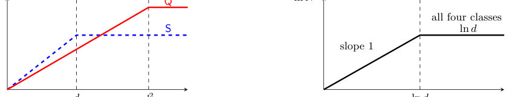
<figcaption class="paper-figure-caption"><b>Fig 1.</b> Fig. 1. Schematic dimension–horizon phase diagram. In panel (a), Q denotes the quantum/CPTP model and S denotes the classical/stochastic model. For fixed positive false-acceptance tolerance, the solid red curve is the quantum model and the dashed blue curve is the classical model; their laws are respectively Θ(min{d2, T}) and Θ(min{d, T}). At zero false acceptance, all four dynamical classes obey Θ(min{ln d, T}). The curves depict the asymptotic scaling orders; finite-dimensional constants are suppressed.</figcaption>
</figure>
<figure class="paper-figure-card">
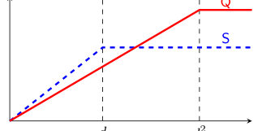
<figcaption class="paper-figure-caption"><b>Fig 2.</b> Figure 1 summarizes the resulting horizon regimes and the sharp change at zero false acceptance.</figcaption>
</figure>
</div>

<p><strong>Summary.</strong> This work establishes the fundamental limits on how much information can be reliably identified from a quantum or classical memory of dimension $d$ given a limited interaction budget $T$. It rigorously proves a quadratic quantum-classical separation in the required code size, showing that quantum systems can encode significantly more information than classical ones under these specific constraints.</p>
<p><strong>Why it may be interesting.</strong> The explicit quantum-classical separation in the scaling of information capacity ($\Theta(d^2)$ vs. $\Theta(d)$) provides a fundamental, resource-theoretic bound on quantum advantage in memory identification tasks.</p>
<details>
<summary>Detailed structure</summary>
<p><strong>Main problem.</strong> The paper determines the finite-horizon identification limits for encoding information about a $d$-dimensional memory using a restricted set of shared quantum or classical generators.</p>
<p><strong>Main result.</strong> It establishes a quadratic quantum-classical separation in the logarithmic code size ($\Theta(d^2)$ vs. $\Theta(d)$) when considering fixed-error identification protocols.</p>
<p><strong>Method.</strong> The analysis involves optimizing the root state, terminal measurement, and generator set jointly by analyzing the structure of the resulting Hankel matrix, comparing finite-horizon bounds to static limits.</p>
<p><strong>Model / system.</strong> The model involves a two-phase identification protocol: a writer applies a prefix word to a root state, and a verifier applies a query word followed by a shared binary test. The system can be modeled by quantum channels (CPTP maps) or classical stochastic maps.</p>
<p><strong>Key observables.</strong> The maximum achievable identification size, $N$, and its logarithmic scaling $\ln N$.</p>
<p><strong>Important parameters / regimes.</strong> Dimension ($d$), Horizon ($T$), and error tolerances ($\lambda_1, \lambda_2$).</p>
<p><strong>Assumptions / limitations.</strong> The control interface is restricted to a small, fixed number (four) of shared, time-homogeneous generators.</p>
<p><strong>Paper structure.</strong> The paper first formalizes the identification problem using dynamical systems and Hankel matrices. It then derives the finite-horizon bounds for quantum (CPTP/Unitary) and classical (Stochastic/Permutation) systems, highlighting the separation in the fully dimension-limited regime. Finally, it analyzes the distinct boundary conditions set by zero vs. positive false-acceptance tolerances.</p>
</details>
<details>
<summary>Abstract</summary>
<p>We determine the finite-horizon identification limits of a \(d\)-dimensional memory when the control interface is restricted to four shared, time-homogeneous generators. A writer encodes a message by applying a prefix word to a common root state. The verifier then applies a candidate-dependent query word followed by a shared terminal binary test, with each word of length at most \(T\). For fixed error tolerances \(λ_2>0\) and \(λ_1+λ_2<1\), the optimal identification sizes satisfy \(\ln N_{\mathsf Q,4}=Θ_{λ_1,λ_2}(\min\{d^2,T\})\) for arbitrary CPTP generators and \(\ln N_{\mathsf S,4}=Θ_{λ_1,λ_2}(\min\{d,T\})\) for stochastic maps. Four unitary letters and four permutation letters attain these respective bounds, showing that a four-letter reversible alphabet reaches the static code-size orders in optimal quadratic and linear word length. In the fully dimension-limited regime, this yields \(\ln N_{\mathsf Q,4}=Θ(d^2)\) versus \(\ln N_{\mathsf S,4}=Θ(d)\), establishing a quadratic quantum--classical separation in logarithmic code size. Low-overlap Grassmann and agreement-code packings supply the orbit endpoints, while exact inverse query words match each encoded state to its designated test. At the sharp boundary \(λ_2=0\), \(0\leqλ_1<1\), all four model classes satisfy \(\ln N=Θ(\min\{\ln d,T\})\). Thus any fixed positive false-acceptance tolerance activates the metric-packing regime, whereas zero false acceptance imposes an exclusive-witness constraint and yields the logarithmic-dimension boundary.</p>
</details>
<p><sub><a href="#top">↑ back to top</a></sub></p>

<p><a id="paper-2610.21478"></a></p>
<h3 id="difference-between-pair-creation-and-anomaly-matching-nontrivial-aspects-of-invertible-symmetries-and-defects-in-math817math-models"><a href="http://arxiv.org/abs/2610.21478v1">Difference between pair creation and anomaly matching: Nontrivial aspects of invertible symmetries and defects in $SU(N)$ models</a></h3>
<p><strong>Authors:</strong> Yoshiki Fukusumi, Shuma Nakashiba<br>
<strong>Type:</strong> theory · <strong>Category:</strong> other · <strong>PDF:</strong> <a href="https://arxiv.org/pdf/2610.21478v1">https://arxiv.org/pdf/2610.21478v1</a><br>
<strong>Analysis basis:</strong> full PDF text, analyzed in chunks
<strong>Topic relevance:</strong> <code>analog quantum simulation</code> <strong>1/5</strong></p>
<div class="figure-strip-hint">↔ Scroll figures horizontally</div>
<div class="paper-figures-scroll">
<figure class="paper-figure-card">
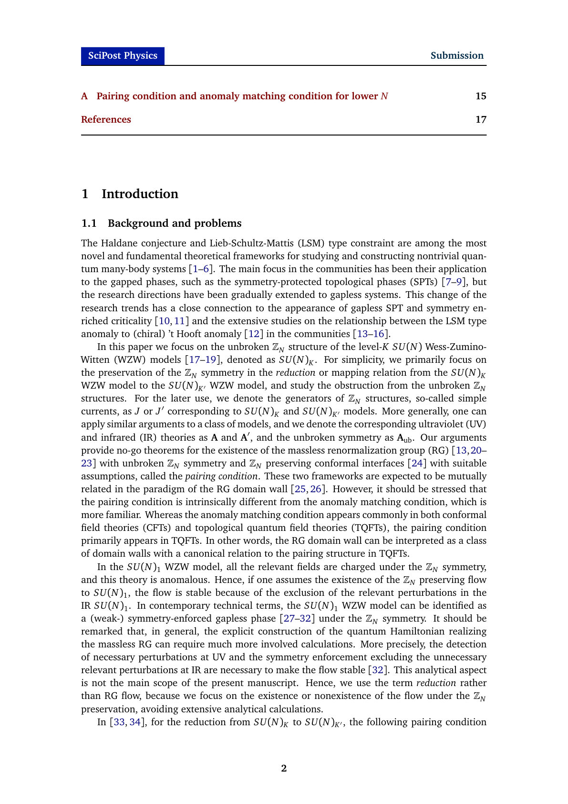
<figcaption class="paper-figure-caption"><b>Fig 1.</b> Low-resolution page preview, page 2</figcaption>
</figure>
<figure class="paper-figure-card">
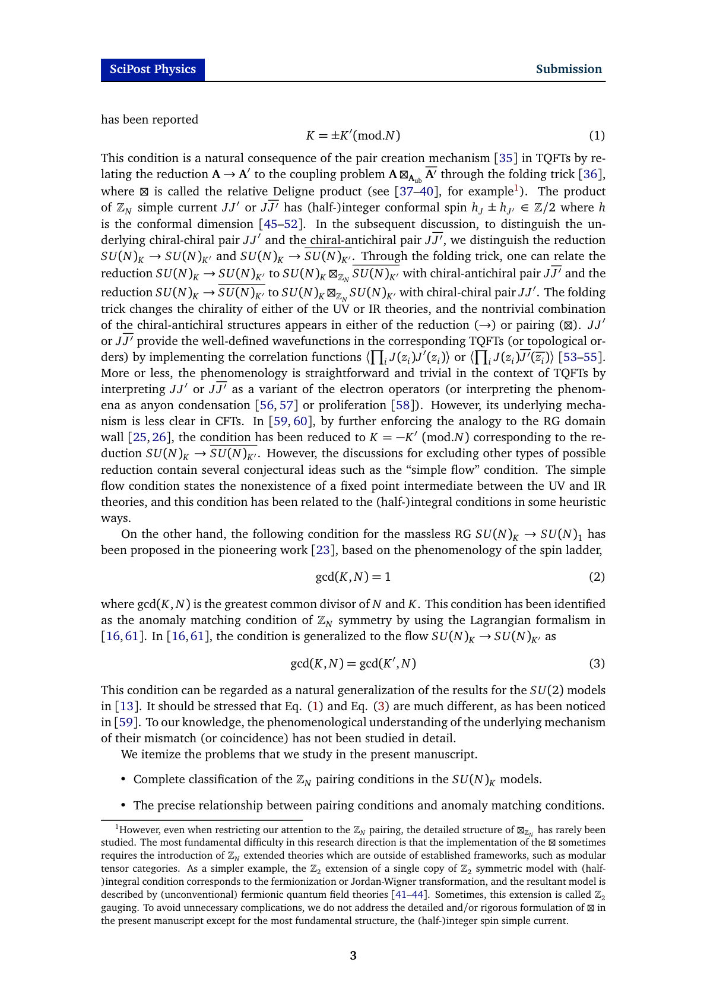
<figcaption class="paper-figure-caption"><b>Fig 2.</b> Low-resolution page preview, page 3</figcaption>
</figure>
<figure class="paper-figure-card">
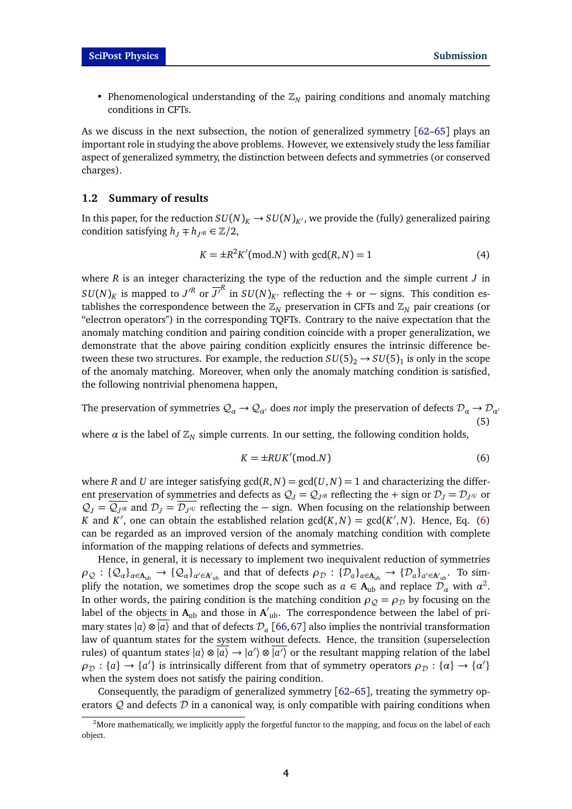
<figcaption class="paper-figure-caption"><b>Fig 3.</b> Low-resolution page preview, page 4</figcaption>
</figure>
<figure class="paper-figure-card">
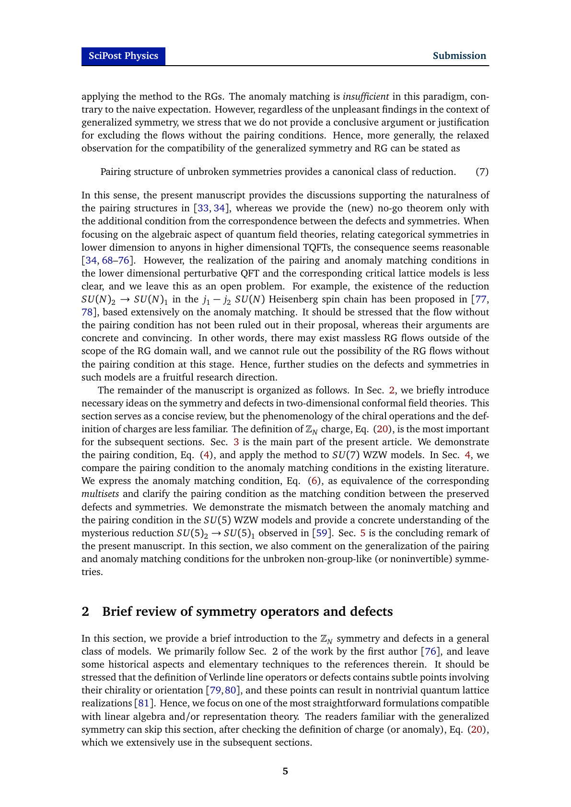
<figcaption class="paper-figure-caption"><b>Fig 4.</b> Low-resolution page preview, page 5</figcaption>
</figure>
<figure class="paper-figure-card">
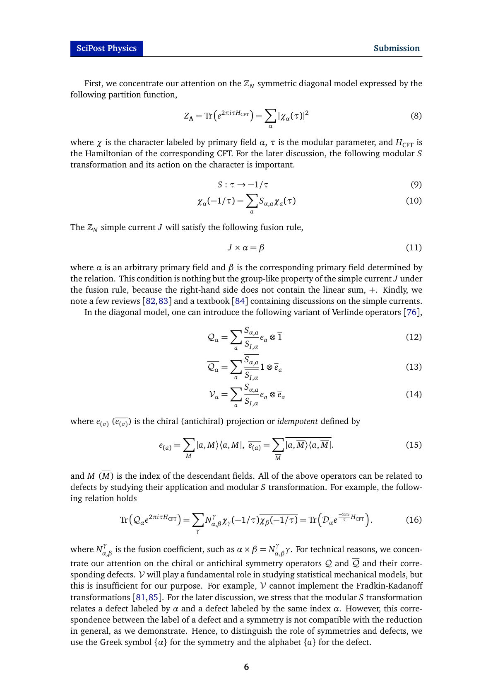
<figcaption class="paper-figure-caption"><b>Fig 5.</b> Low-resolution page preview, page 6</figcaption>
</figure>
</div>

<p><strong>Summary.</strong> This theoretical paper distinguishes between two mathematical constraints—the pairing condition and the anomaly matching condition—that govern how symmetries and defects behave when mapping between $SU(N)$ WZW models. The authors demonstrate that the pairing condition is a stronger, canonical requirement necessary for a consistent description, suggesting it might be a more fundamental guiding principle than anomaly matching alone.</p>
<p><strong>Why it may be interesting.</strong> The deep connection between symmetry protection, topological defects, and anomaly matching in highly symmetric quantum field theories provides a powerful, abstract framework applicable to understanding critical points in condensed matter systems.</p>
<details>
<summary>Detailed structure</summary>
<p><strong>Main problem.</strong> The paper investigates the fundamental difference between the 'pairing condition' derived from topological quantum field theories (TQFTs) and the 'anomaly matching condition' familiar from conformal field theories (CFTs) when mapping between $SU(N)$ WZW models.</p>
<p><strong>Main result.</strong> The pairing condition provides a canonical relationship between symmetries and defects, which is shown to be intrinsically different and stronger than the condition derived solely from anomaly matching.</p>
<p><strong>Method.</strong> The analysis involves comparing constraints derived from simple current structures in TQFTs against anomaly matching requirements in CFTs, utilizing concepts from algebraic structures like $\mathbb{Z}_N$ symmetries.</p>
<p><strong>Model / system.</strong> The primary models are $SU(N)_K$ Wess-Zumino-Witten (WZW) models, focusing on the reduction or mapping between models with different levels ($K$ and $K'$).</p>
<p><strong>Key observables.</strong> The relationship between the levels $K$ and $K'$ modulo $N$, specifically comparing the pairing condition ($K = \pm R^2 K'$) versus the anomaly matching condition ($K = \pm R U K'$).</p>
<p><strong>Important parameters / regimes.</strong> The level $K$ and $K'$ of the $SU(N)$ WZW models, and the integer $N$ defining the $\mathbb{Z}_N$ symmetry.</p>
<p><strong>Assumptions / limitations.</strong> The analysis relies on comparing constraints derived from the folding trick/relative Deligne product ($oxtimes_{\mathbb{Z}_N}$) and the standard anomaly matching procedure.</p>
<p><strong>Paper structure.</strong> The paper proceeds by first establishing the constraints from the pairing condition and then comparing these results to those obtained from the anomaly matching condition, culminating in a discussion of the implications of this mismatch.</p>
</details>
<details>
<summary>Abstract</summary>
<p>We study the connection between the $SU(N)_{K}$ Wess-Zumino-Witten (WZW) model and $SU(N)_{K'}$ WZW models, enforcing the unbroken $\mathbb{Z}_{N}$ symmetries. The fundamental underlying structures are the (half-)integer spin simple currents in the topological quantum field theories and anomaly matching conditions in conformal field theories. For the (half-)integer spin simple current condition of the folded models $SU(N)_{K}\boxtimes_{\mathbb{Z}_{N}} \overline{SU(N)_{K'}}$ or $SU(N)_{K}\boxtimes_{\mathbb{Z}_{N}} SU(N)_{K'}$, we obtain the generalized pairing condition $K= \pm R^{2}K' (\text{mod}.N)$ with $\text{gcd}(R,N)=1$. On the other hand, the anomaly matching condition results in the weaker condition $K= \pm RUK' (\text{mod}.N)$ with $\text{gcd}(R,N)=\text{gcd}(U,N)=1$. Surprisingly, the anomaly matching without the pairing condition results in the intrinsic mismatch of the preservation law of the $\mathbb{Z}_{N}$ defects and symmetries. The pairing condition canonically relates symmetries and defects, as in category theory, whereas it is unclear whether it can be a guiding principle in prohibiting the massless renormalization group flows.</p>
</details>
<p><sub><a href="#top">↑ back to top</a></sub></p>

<p><a id="paper-2610.20846"></a></p>
<h3 id="entanglement-of-superpositions-in-zero-energy-subspace-insights-from-stabilizer-theory"><a href="http://arxiv.org/abs/2610.20846v1">Entanglement of superpositions in zero-energy subspace: insights from stabilizer theory</a></h3>
<p><strong>Authors:</strong> Konstantin Antipin, Richik Sengupta<br>
<strong>Type:</strong> theory · <strong>Category:</strong> other · <strong>PDF:</strong> <a href="https://arxiv.org/pdf/2610.20846v1">https://arxiv.org/pdf/2610.20846v1</a><br>
<strong>Analysis basis:</strong> full PDF text, analyzed in chunks
<strong>Topic relevance:</strong> <code>analog quantum simulation</code> <strong>1/5</strong></p>
<div class="figure-strip-hint">↔ Scroll figures horizontally</div>
<div class="paper-figures-scroll">
<figure class="paper-figure-card">
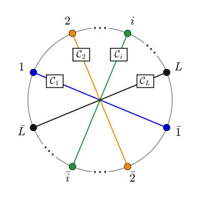
<figcaption class="paper-figure-caption"><b>Fig 1.</b> FIG. 1. Antipodal dimer construction of Theorem 1 on a periodic chain of 2L sites. Each colored diameter joins the two sites supporting one dimer (Ci ⊗I¯i) P2 s=1 |s⟩i ⊗|s⟩¯i. The operators Ci act on the unbarred sites.</figcaption>
</figure>
<figure class="paper-figure-card">
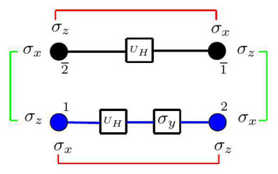
<figcaption class="paper-figure-caption"><b>Fig 2.</b> FIG. 2. The product zero-energy eigenstate of the XZ Hamil- tonian on four sites (L = 2). The states (103) (blue) and (104) (black) are shown alongside the four terms of the Hamiltonian and their respective sites. The terms canceling each other out are marked with brackets of the same color (red and green).</figcaption>
</figure>
<figure class="paper-figure-card">
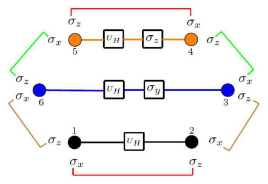
<figcaption class="paper-figure-caption"><b>Fig 3.</b> FIG. 3. Ladder construction for the eigenstates of the XZ Hamiltonian on a 6-site spin chain. Mutually counterbalanc- ing Hamiltonian terms are marked with brackets of the same color.</figcaption>
</figure>
<figure class="paper-figure-card">
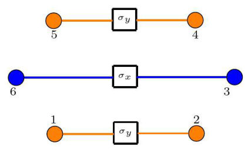
<figcaption class="paper-figure-caption"><b>Fig 4.</b> FIG. 4. Ladder construction for the eigenstates of the XY model on a 6-site spin chain, featuring dimer states |ϕ⟩X (blue) and |ϕ⟩Y (orange).</figcaption>
</figure>
</div>

<p><strong>Summary.</strong> This work analyzes the entanglement properties of superpositions of zero-energy eigenstates in spin chains using stabilizer theory. By optimizing the entanglement entropy over the spanned subspace, the authors determine scaling laws for the minimum entanglement. The results provide new insights into the structure of the zero-energy manifold and suggest methods for constructing additional exact eigenstates.</p>
<p><strong>Why it may be interesting.</strong> The rigorous application of stabilizer theory to entanglement optimization in lattice models provides powerful tools for understanding ground state properties and entanglement structure in strongly correlated quantum systems.</p>
<details>
<summary>Detailed structure</summary>
<p><strong>Main problem.</strong> The paper investigates the entanglement properties of superpositions formed from exact zero-energy eigenstates within a constrained subspace of spin Hamiltonians.</p>
<p><strong>Main result.</strong> For certain Hamiltonians, the minimum entanglement entropy across a chain bipartition obeys a volume law, and the analysis reveals methods to construct other exact eigenstates, including those with zero entanglement.</p>
<p><strong>Method.</strong> The study employs stabilizer theory and polynomial methods to characterize the spanned subspace and optimize the entanglement entropy over all possible superpositions.</p>
<p><strong>Model / system.</strong> The focus is on geometrically local spin-1/2 chains with periodic boundary conditions, governed by Hamiltonians that are sums of local Pauli interactions.</p>
<p><strong>Key observables.</strong> Minimum entanglement entropy (half-chain entanglement entropy), the structure of the least-entangled superpositions, and the scaling of entanglement with system size.</p>
<p><strong>Important parameters / regimes.</strong> Fixed interaction range, system size L, and the specific form of the local Pauli interaction terms.</p>
<p><strong>Assumptions / limitations.</strong> The analysis primarily focuses on the subspace spanned by antipodal states, which may not cover the entire zero-energy eigenspace.</p>
<p><strong>Figures summary.</strong> Figure 1 illustrates the structure of the zero-energy eigenstate as a tensor product of entangled dimers on antipodal sites.</p>
<p><strong>Paper structure.</strong> The paper systematically analyzes the entanglement optimization problem, using stabilizer theory to characterize the subspace, deriving the minimum entanglement entropy, and then using the structure of the least-entangled states to propose new exact eigenstate constructions.</p>
</details>
<details>
<summary>Abstract</summary>
<p>Exact zero-energy eigenstates built from entangled dimers have recently been found in a large class of spin Hamiltonians. While the individual states have a simple structure, their superpositions can have very different entanglement properties. In this work, we study these superpositions for geometrically local spin-1/2 chains with periodic boundary conditions. Using stabilizer theory and polynomial methods, we characterize the subspace they span and find the minimum entanglement entropy between two halves of the chain. For Hamiltonians generated by a single local Pauli interaction with noncommuting translates, this minimum obeys a volume law at fixed interaction range. The structure of the least-entangled superpositions also suggests further exact eigenstate constructions, including zero-energy states separable between the two halves of the chain and states at nonzero energies.</p>
</details>
<p><sub><a href="#top">↑ back to top</a></sub></p>

<p><a id="paper-2610.20703"></a></p>
<h3 id="finite-cutoff-geometry-from-double-scaled-syk"><a href="http://arxiv.org/abs/2610.20703v1">Finite-cutoff geometry from double-scaled SYK</a></h3>
<p><strong>Authors:</strong> Sergio E. Aguilar-Gutierrez<br>
<strong>Type:</strong> theory · <strong>Category:</strong> other · <strong>PDF:</strong> <a href="https://arxiv.org/pdf/2610.20703v1">https://arxiv.org/pdf/2610.20703v1</a><br>
<strong>Analysis basis:</strong> full PDF text, analyzed in chunks
<strong>Topic relevance:</strong> <code>Keldysh / 2PI / non-Gaussian methods</code> <strong>1/5</strong></p>
<div class="figure-strip-hint">↔ Scroll figures horizontally</div>
<div class="paper-figures-scroll">
<figure class="paper-figure-card">
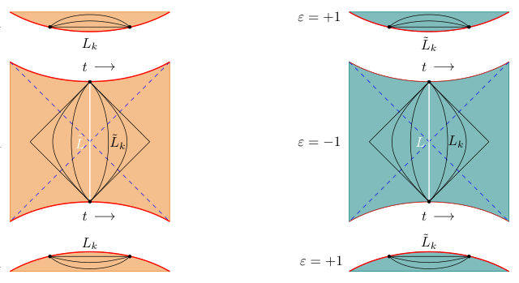
<figcaption class="paper-figure-caption"><b>Fig 1.</b> Figure 1: CMC slices (black curves) between Dirichlet boundaries (red curves) in an AdS2 black hole (light orange) dS2 space (light blue). η = +1 denotes the finite regions described by T 2 deformations in the boundary dual, and η = −1 for T 2 + Λ1. Further, ε = −1 corresponds to regions where 0 ≤Φ ≤Φb, with Φ = Φb being the dilaton at the boundary; while ε = +1 corresponds to those where Φ ≥Φb, associated to the different branches in the energy spectrum. Lk denotes the length of CMC slices when ε = −1, L ≡Lk=0; and ˜Lk for ε = +1, while ˜L = ˜Lk=0.</figcaption>
</figure>
<figure class="paper-figure-card">
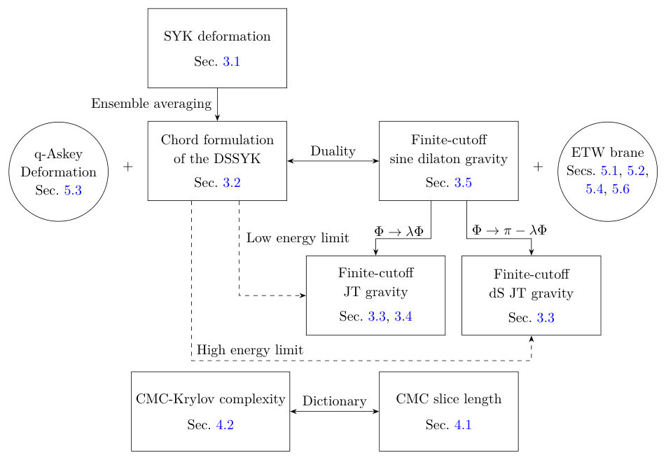
<figcaption class="paper-figure-caption"><b>Fig 2.</b> Figure 2: Structure of this work. We highlight the connection between the different topics, ranging from SYK deformations to ETW branes in sine dilaton gravity, and their location in the main text.</figcaption>
</figure>
<figure class="paper-figure-card">
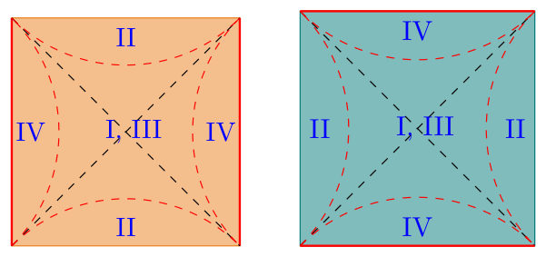
<figcaption class="paper-figure-caption"><b>Fig 3.</b> Figure 3: Asymptotic Dirichlet boundaries (solid red lines) in the AdS2 black hole (left) and in dS2 space (right) can be moved to different locations (red dashed lines), marked I-IV, in the Penrose diagram through a dual T 2 (η = +1) or T 2 + Λ1 (η = −1) deformation in the boundary theory. Each region represents a combination of the η and ε parameters in the energy spectrum (2.23), (2.24), where ε = −1 corresponds to the perturbative solutions and ε = +1 the non-perturbative ones. The regions are denoted: (I) η = +1, ε = −1; (II) η = −1, ε = −1, (III) η = −1, ε = +1; (IV) η = +1, ε = +1. CMC slices in cases I and II are space/timelike in AdS/dS2, while III and IV are time/spacelike.</figcaption>
</figure>
<figure class="paper-figure-card">
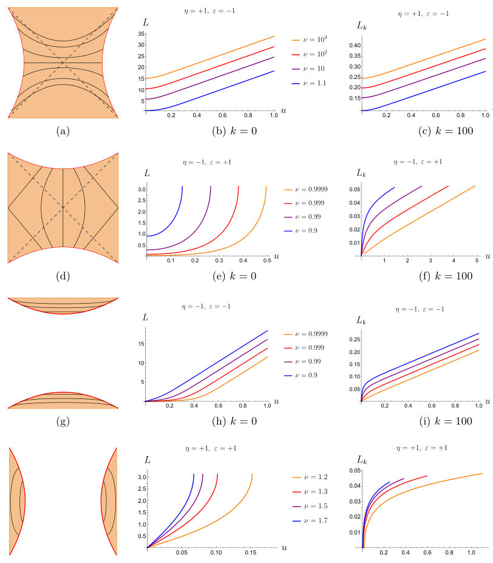
<figcaption class="paper-figure-caption"><b>Fig 4.</b> Figure 4: Left: AdS2 black hole Penrose diagrams describing the low-energy bulk dual of the deformed DSSYK for (a) η = +1, ε = −1; (d) η = −1, ε = +1; (g) η = −1 ε = −1, (j) η = +1, ε = +1. Black curves represent geodesic lines. Middle and right: Comparison between the geodesic length L (middle column) and the CMC slice length Lk when k = 100 (right column) as a function of the rescaled time u for different values of ν (displayed in the figure). The convexity of Lk(t) increases with increasing |k|.</figcaption>
</figure>
<figure class="paper-figure-card">
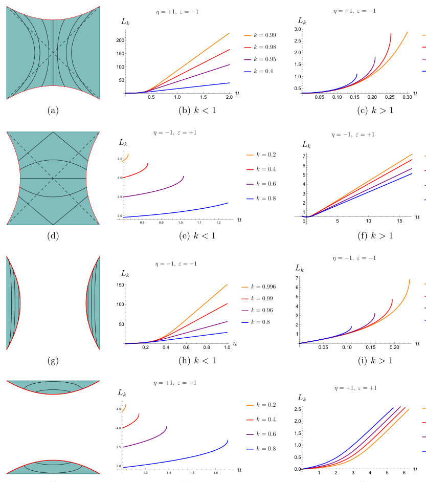
<figcaption class="paper-figure-caption"><b>Fig 5.</b> Figure 5: Left: dS2 Penrose diagrams for (a) η = +1, ε = −1; (c) η = −1, ε = +1; (f) η = −1 ε = −1, (h) η = +1, ε = +1. Black curves denote geodesic lines. Middle and right: corresponding plots of the CMC slice length Lk for fixed ν = 0.6 (when η = −1) and ν = 1.1 (η = +1); for ε = −1 the relation (4.11) is the same as in AdS2 and the growth is linear at late times for every k, while for ε = +1 the growth is hyperfast when |k| &lt; 1 and linear when |k| &gt; 1 (4.10). The convexity of Lk(t) increases as |k| increases.</figcaption>
</figure>
</div>

<p><strong>Summary.</strong> This work constructs a finite-cutoff holographic dual for the double-scaled SYK model, linking it to sine dilaton gravity describing wormholes. It provides a comprehensive dictionary connecting bulk gravitational features, such as AdS/dS geometries and wormholes, to boundary quantum field theory deformations. The research is significant for developing a consistent, finite-cutoff framework for studying quantum gravity effects in strongly coupled systems.</p>
<p><strong>Why it may be interesting.</strong> While highly theoretical, the connection between complexity measures (like Krylov complexity) and geometric observables (like bulk lengths) is a central theme in modern quantum gravity, which informs the understanding of quantum information processing in curved spacetime.</p>
<details>
<summary>Detailed structure</summary>
<p><strong>Main problem.</strong> The paper develops a finite-cutoff holographic description for the double-scaled SYK (DSSYK) model, connecting it to gravitational physics in AdS and dS backgrounds.</p>
<p><strong>Main result.</strong> It establishes a microscopic framework for studying finite-cutoff boundaries, CMC slices, and branes within the DSSYK holographic dictionary, unifying descriptions of AdS and dS geometries.</p>
<p><strong>Method.</strong> The analysis involves constructing microscopic deformations of SYK states, solving flow equations, and extending calculations for constant mean curvature (CMC) slices.</p>
<p><strong>Model / system.</strong> The primary system is the DSSYK model, dual to finite-cutoff sine dilaton gravity. The theory describes wormhole states and transitions between AdS and dS geometries in the low and high-energy limits.</p>
<p><strong>Key observables.</strong> Complexity (Krylov complexity), wormhole lengths, energy spectrum flow, and boundary theory deformations.</p>
<p><strong>Important parameters / regimes.</strong> The cutoff scale, the deformation parameters ($\Lambda_1, \Lambda_2$), and the low-energy limit parameters ($\Phi_b, \hat{L}, \hat{P}$).</p>
<p><strong>Assumptions / limitations.</strong> The perturbative branch is assumed to admit physical quantum states, and the analysis relies on the validity of the holographic dictionary at finite cutoffs.</p>
<p><strong>Figures summary.</strong> Figure 1 illustrates CMC slices in AdS2 black hole and dS2 space. Table 1 summarizes the holographic dictionary relating the finite cutoff AdS black hole with an ETW brane to the deformed DSSYK model.</p>
<p><strong>Paper structure.</strong> The paper progresses by first defining the finite-cutoff holographic description, analyzing the low-energy limits connecting JT/sine dilaton gravity, incorporating ETW branes, and finally interpreting the results via CMC-Krylov complexity.</p>
</details>
<details>
<summary>Abstract</summary>
<p>We develop a finite-cutoff holographic description of the double-scaled SYK (DSSYK) model. We construct microscopic deformations of Kourkoulou-Maldacena and thermofield-double SYK states whose double-scaling limits reproduce a lower-dimensional analogue of $\text{T}\overline{\text{T}}$ and $\text{T}\overline{\text{T}}+Λ_2$ deformations, which we denote $T^2$ and $T^2+Λ_1$, respectively. The ensemble-averaged theory describes wormhole states in finite-cutoff sine dilaton gravity, and finite-cutoff anti-de Sitter and de Sitter geometries in the low- and high-energy regimes, respectively. The analysis includes both perturbative and non-perturbative solutions to the energy spectrum flow equation, and the regions behind and beyond the respective horizons. Only the perturbative branch admits physical quantum states. We study how to incorporate end-of-the-world (ETW) branes in the finite cutoff holographic dictionary. The ETW brane leads to an additional boundary theory deformation, which leads to black hole or eternal traversable wormhole geometries depending on the existence of normalizable bound states. We extend the finite cutoff length evaluations for constant mean curvature (CMC) slices, and interpret them as complexity in the boundary theory. We discuss possible extensions with matter. Our results provide a microscopic framework for studying the finite-cutoff boundaries, CMC slices and branes in the holographic dictionary of DSSYK.</p>
</details>
<p><sub><a href="#top">↑ back to top</a></sub></p>

<p><a id="paper-2610.21631"></a></p>
<h3 id="finite-size-geometric-crossover-toward-fragmentation-of-the-potential-energy-shell-in-the-quantum-random-energy-model"><a href="http://arxiv.org/abs/2610.21631v1">Finite-size geometric crossover toward fragmentation of the potential energy shell in the quantum random energy model</a></h3>
<p><strong>Authors:</strong> Ishita Modak, Vatsana Tiwari, Soumya Bera<br>
<strong>Type:</strong> theory · <strong>Category:</strong> disordered systems and neural networks · <strong>PDF:</strong> <a href="https://arxiv.org/pdf/2610.21631v1">https://arxiv.org/pdf/2610.21631v1</a><br>
<strong>Analysis basis:</strong> full PDF text, analyzed in chunks
<strong>Topic relevance:</strong> <code>scars &amp; prethermalization</code> <strong>1/5</strong></p>
<div class="figure-strip-hint">↔ Scroll figures horizontally</div>
<div class="paper-figures-scroll">
<figure class="paper-figure-card">
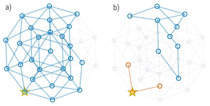
<figcaption class="paper-figure-caption"><b>Fig 1.</b> FIG. 1. Illustration of the fragmentation of the potential en- ergy shell S defined in Eq. (3) for a basis state (shown here as a star) at energy density ε = 0, and L = 5 for a typical disorder configuration. The vertices denote basis states, while the edges represent single-spin-flip connections as defined in Eq. (1). (a) For Γ = 0.6, the shell forms a single connected component. (b) For Γ = 0.2, the shell fragments into dis- connected clusters (here two), confining the initial state to a subset of the energy shell.</figcaption>
</figure>
<figure class="paper-figure-card">
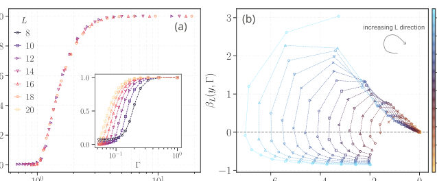
<figcaption class="paper-figure-caption"><b>Fig 2.</b> FIG. 2. (a) Inset: Disorder dependence of the disorder-averaged connected fraction of the potential energy shell, Ncsh/Nsh, for several system sizes L at ε = 0. Overline denotes the disorder average. The main panel shows an approximate data collapse when the horizontal axis is rescaled by L −1, indicating the finite-size crossover scale Γc ∝1/(L −1). For clarity, data for</figcaption>
</figure>
<figure class="paper-figure-card">
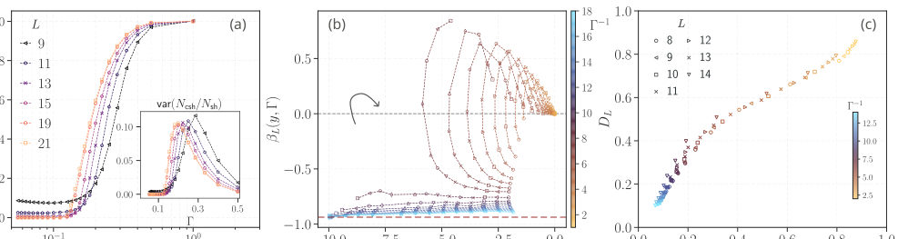
<figcaption class="paper-figure-caption"><b>Fig 3.</b> FIG. 3. (a) Disorder dependence of the disorder-averaged connected fraction of the potential energy shell, Ncsh/Nsh, for various system sizes L at ε = √</figcaption>
</figure>
<figure class="paper-figure-card">
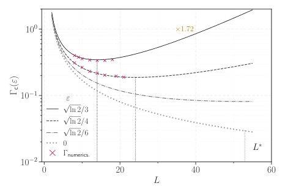
<figcaption class="paper-figure-caption"><b>Fig 4.</b> FIG. 4. Finite-size one-hop estimate of the shell-percolation threshold, Γc(L, ε), at the indicated energy densities ε, as de- scribed in Eq. (12). A single heuristic multiplicative factor of ≃1.72 is applied to the analytical curves to match the numer- ical estimates, shown by crosses. For ε ̸= 0, Γc reaches a min- imum at L∗(ε) (vertical dotted lines): increasing L initially favors hypercube connectivity, but beyond L∗(ε) disfavors it. The numerical estimates, shown by crosses, are obtained from the maxima of var(Ncsh/Nsh) (see Appendix A).</figcaption>
</figure>
</div>

<p><strong>Summary.</strong> This work analyzes the geometric structure of the potential energy shell in the Quantum Random Energy Model (QREM) to study localization transitions. By treating the shell connectivity as an independent site percolation problem, the authors map out a finite-size geometric crossover. The key finding is a nonmonotonic dependence of this crossover scale on system size at finite energy density, offering a novel diagnostic for quantum dynamics.</p>
<p><strong>Why it may be interesting.</strong> The connection between geometric properties (shell connectivity) and quantum localization transitions provides a powerful, coarse-grained diagnostic tool for understanding complex many-body dynamics, linking concepts from percolation theory to quantum chaos.</p>
<details>
<summary>Detailed structure</summary>
<p><strong>Main problem.</strong> The paper investigates the finite-size geometric crossover of the potential energy shell in the Quantum Random Energy Model (QREM) as the transverse field is varied.</p>
<p><strong>Main result.</strong> The energy-selected subgraph undergoes a crossover between connected and fragmented regimes, showing a nonmonotonic dependence of the crossover scale on system size L at finite energy density.</p>
<p><strong>Method.</strong> The connectivity of the energy shell is analyzed as an effective independent site percolation problem on the hypercube, utilizing one-hop approximations and $eta$-function flow analysis.</p>
<p><strong>Model / system.</strong> The study uses the Quantum Random Energy Model (QREM) defined on an L-dimensional hypercube, where the Hamiltonian has independent Gaussian random variables for its diagonal energies.</p>
<p><strong>Key observables.</strong> Potential Energy Shell connectivity ($N_{csh}/N_{sh}$), finite-size fractal dimension (from participation entropy), and the crossover scale $\Gamma_c$.</p>
<p><strong>Important parameters / regimes.</strong> Transverse field ($\Gamma$), system size ($L$), and finite energy density ($\epsilon$).</p>
<p><strong>Assumptions / limitations.</strong> The analysis of shell connectivity at finite $\epsilon$ relies on specific assumptions regarding the effective percolation problem, and the geometric fragmentation is distinct from kinetic constraints.</p>
<p><strong>Figures summary.</strong> Figures illustrate the fragmentation of the potential energy shell for $\epsilon=0$ and show the disorder dependence of the connected fraction, correlating geometric and fractal dimensions.</p>
<p><strong>Paper structure.</strong> The paper progresses by defining the QREM and the energy shell, analyzing its connectivity via percolation theory, and deriving scaling laws that reveal the nonmonotonic crossover behavior at finite energy density.</p>
</details>
<details>
<summary>Abstract</summary>
<p>The quantum random energy model (QREM) is a paradigmatic model for studying delocalization-localization transitions at finite energy density in Fock space. In the computational basis, its diagonal energies are independent Gaussian random variables, in contrast to the correlated energies of local interacting models such as the disordered XXZ chain. In this work, we construct a potential energy shell associated with a basis state, defined through its energy variance, and investigate its connectivity on the Fock-space hypercube. As the transverse field is varied, this energy-selected subgraph undergoes a finite-size geometric crossover between fully connected and fragmented regimes. Furthermore, we observe a correlation between the shell connectivity and the finite-size fractal dimension of the eigenstates, as extracted from the participation entropy. For the QREM, the statistical independence of the diagonal energies allows the shell connectivity to be analyzed as an effective independent site percolation problem on the hypercube, with its crossover scale estimated within a one-hop approximation. At finite energy density, this estimate gives a nonmonotonic dependence of the crossover scale on system size $L$: increasing $L$ initially favors connectivity, while beyond an energy-dependent scale $L^*(\varepsilon)$ the trend reverses towards fragmentation.</p>
</details>
<p><sub><a href="#top">↑ back to top</a></sub></p>

<p><a id="paper-2610.21580"></a></p>
<h3 id="flat-band-ferrimagnetism-in-the-edge-centered-honeycomb-antiferromagnet-from-harmonic-flat-magnon-to-broad-continuum"><a href="http://arxiv.org/abs/2610.21580v1">Flat-band ferrimagnetism in the edge-centered honeycomb antiferromagnet: From harmonic flat magnon to broad continuum</a></h3>
<p><strong>Authors:</strong> Sicheng He, Zhixuan Zhao, Hanxiang Di, Shuaihua Zhang, Yanling Wu, Jun Li<br>
<strong>Type:</strong> theory · <strong>Category:</strong> strongly correlated electrons · <strong>PDF:</strong> <a href="https://arxiv.org/pdf/2610.21580v1">https://arxiv.org/pdf/2610.21580v1</a><br>
<strong>Analysis basis:</strong> full PDF text, analyzed in chunks
<strong>Topic relevance:</strong> <code>analog quantum simulation</code> <strong>1/5</strong></p>
<div class="figure-strip-hint">↔ Scroll figures horizontally</div>
<div class="paper-figures-scroll">
<figure class="paper-figure-card">
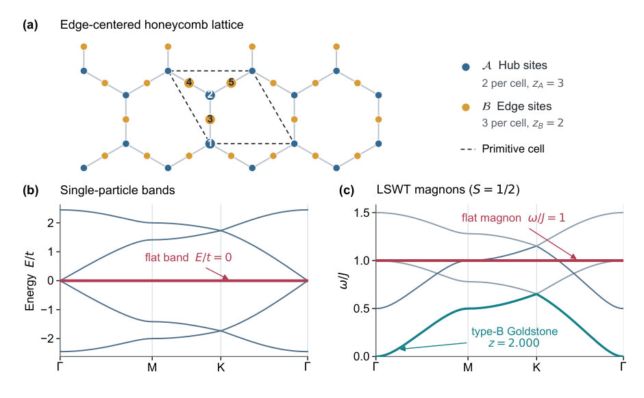
<figcaption class="paper-figure-caption"><b>Fig 1.</b> FIG. 1. (a) Primitive cell and periodic nearest-neighbor graph; hub and edge sublattices are distinguished. (b) Single-particle bands along Γ −M −K −Γ, including the central flat band. (c) LSWT magnon bands for S = 1/2; the flat branch at ω/J = 1 and the quadratic type-B Goldstone mode are emphasized.</figcaption>
</figure>
<figure class="paper-figure-card">
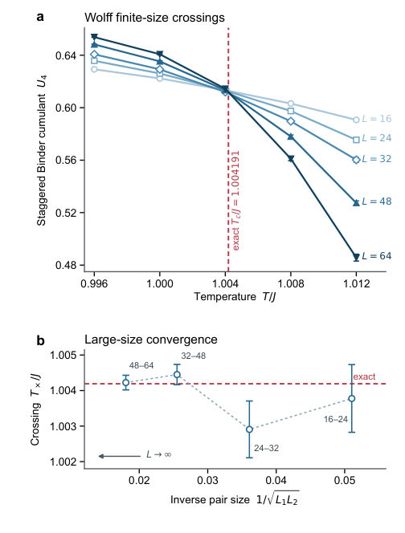
<figcaption class="paper-figure-caption"><b>Fig 2.</b> FIG. 2. (a) Staggered Binder cumulant for the 35 simulated parameter points; the vertical line denotes the exact critical temperature of Eq. (19). (b) Crossing temperatures of pairs of system sizes versus inverse geometric-mean size. Error bars indicate standard errors from 1/2/4/8-bin reblocking.</figcaption>
</figure>
<figure class="paper-figure-card">
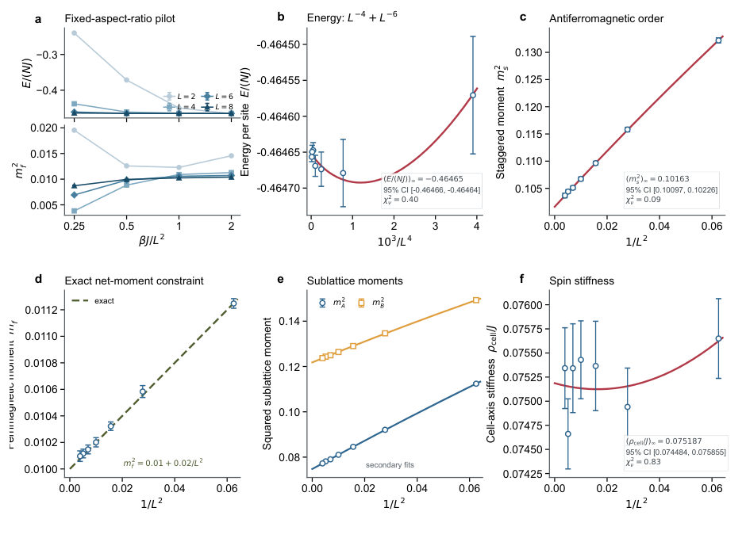
<figcaption class="paper-figure-caption"><b>Fig 3.</b> FIG. 3. (a) Energy and squared ferrimagnetic moment versus βJ/L2 from the preliminary scan for L = 2, 4, 6, 8. (b) Energy per site with a fit to e0 + a4L−4 + a6L−6. (c) Squared staggered moment with a fit to m2 s,∞+ b2L−2 + b4L−4. (d) Squared ferrimagnetic moment compared with the finite-size Lieb–Mattis value 0.01 + 0.02/L2. (e) Squared hub and edge sublattice moments with direct fits. (f) Spin stiffness in cell-axis units with a fit to ρcell,∞+ c2L−2 + c4L−4. Data in (b)–(f) combine two independent Markov chains (128 bins per size); error bars are the largest of the unblocked and chain-resolved 2/4/8-bin standard errors. Intervals reported in the panels are 95% parametric-bootstrap...</figcaption>
</figure>
<figure class="paper-figure-card">
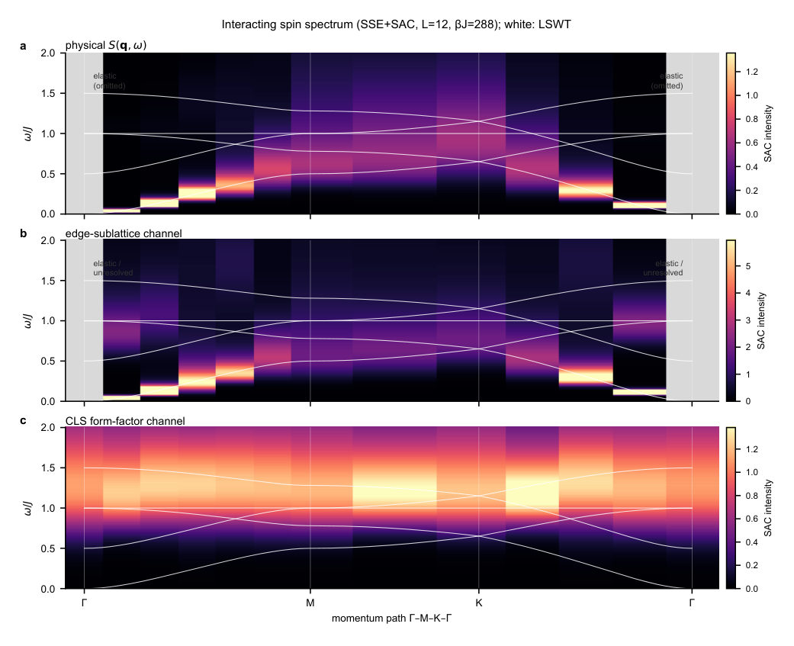
<figcaption class="paper-figure-caption"><b>Fig 4.</b> FIG. 4. Dynamical spectra for L = 12 and βJ = 288 obtained by stochastic analytic continuation of 64 bins: (a) total-spin, (b) edge-sublattice, and (c) CLS form-factor channel along Γ–M–K–Γ. White lines represent the five LSWT branches. Each panel has its own intensity scale. Gray regions at the path endpoints denote elastic or unresolved Γ-point channels.</figcaption>
</figure>
</div>

<p><strong>Summary.</strong> This work investigates the magnetic excitations of a spin-1/2 antiferromagnet on a honeycomb lattice with sublattice imbalance. While single-particle theory predicts a sharp flat magnon mode, advanced quantum simulations reveal that strong quantum fluctuations broaden this mode into a continuum. This suggests that the flat-band geometry organizes the overall spectral weight rather than guaranteeing a stable, protected quasiparticle excitation.</p>
<p><strong>Why it may be interesting.</strong> The transition from a sharp, protected excitation (predicted by mean-field/LSWT) to a broad continuum due to quantum fluctuations is a fundamental concept in strongly correlated systems, relevant to understanding spectral weight renormalization in quantum magnets.</p>
<details>
<summary>Detailed structure</summary>
<p><strong>Main problem.</strong> To determine if the flat magnon excitation, predicted by single-particle or linear spin-wave theory, survives as a protected sharp quasiparticle in a genuine many-body quantum magnet.</p>
<p><strong>Main result.</strong> Quantum fluctuations transform the harmonic flat magnon mode into a broad continuum, suggesting that flat-band geometry organizes many-body spectral weight rather than yielding a protected quasiparticle.</p>
<p><strong>Method.</strong> The study combines Linear Spin-Wave Theory (LSWT) with advanced quantum simulation techniques like Stochastic Series Expansion (SSE) Quantum Monte Carlo and Stochastic Analytic Continuation.</p>
<p><strong>Model / system.</strong> The system is a spin-1/2 Heisenberg antiferromagnet on an edge-centered honeycomb lattice, which possesses a 2:3 sublattice imbalance that enforces a ferrimagnetic ground state.</p>
<p><strong>Key observables.</strong> Flat magnon energy ($\omega/J=1$ in LSWT), the resulting continuum centroid ($\approx 1.55J$), and the ground-state magnetization ($S_0$).</p>
<p><strong>Important parameters / regimes.</strong> Antiferromagnetic coupling strength ($J$), sublattice imbalance ratio (2:3), and temperature (for finite-T studies).</p>
<p><strong>Assumptions / limitations.</strong> The analysis is performed for the isotropic nearest-neighbor antiferromagnet in zero external field, contrasting LSWT predictions with full quantum treatments.</p>
<p><strong>Figures summary.</strong> Figures illustrate the lattice structure, the single-particle flat band, and the LSWT magnon bands, highlighting the initial flat branch and the subsequent continuum broadening.</p>
<p><strong>Paper structure.</strong> The paper establishes the physical model (lattice, imbalance), analyzes the single-particle and LSWT predictions (flat band/magnon), and then uses advanced quantum simulations (QMC/SAC) to show how interactions modify this sharp mode into a broad continuum.</p>
</details>
<details>
<summary>Abstract</summary>
<p>One of the most striking aspects of a flat band is not merely its lack of dispersion, but that it reduces the single-particle kinetic energy to a very small scale, allowing interaction effects to become the dominant energy scale in the low-energy physics. This picture has underpinned concepts such as flat-band ferromagnetism, flat-band superconductivity, and localized magnons. A more fundamental question, however, remains. Flat bands belong to the language of single-particle or linear-spin-wave physics; whether they survive as protected sharp excitations in a genuine many-body quantum magnet, or merely provide a skeleton of spectral weight left by the noninteracting picture, remains unclear. We study the spin-1/2 Heisenberg antiferromagnet on the edge-centered honeycomb lattice to examine this question. In contrast to flat bands in geometrically frustrated magnets such as kagome, this lattice has a 2:3 sublattice imbalance that renders the intersublattice coupling matrix rectangular, whose null space gives rise to a flat band at the single-particle level. The same imbalance stabilizes a ferrimagnetic ground state through the Lieb--Mattis theorem and leads to an edge-site-localized flat magnon in linear spin-wave theory. Combining linear spin-wave theory, sign-problem-free stochastic series expansion quantum Monte Carlo, and stochastic analytic continuation, we find that quantum fluctuations transform this harmonic flat mode into a broad continuum whose centroid is about 1.55J and nearly dispersionless along the high-symmetry path. Sublattice imbalance thus offers an unfrustrated route that unifies flat bands and ferrimagnetism, and suggests that flat-band geometry organizes many-body spectral weight rather than giving rise to a protected quasiparticle.</p>
</details>
<p><sub><a href="#top">↑ back to top</a></sub></p>

<p><a id="paper-2610.21883"></a></p>
<h3 id="hybrid-quantum-classical-optimization-for-emergency-priority-traffic-signal-control"><a href="http://arxiv.org/abs/2610.21883v1">Hybrid Quantum-Classical Optimization for Emergency-Priority Traffic Signal Control</a></h3>
<p><strong>Authors:</strong> Silvie Illésová, Vojtěch Novák<br>
<strong>Type:</strong> theory · <strong>Category:</strong> quantum information and computing · <strong>PDF:</strong> <a href="https://arxiv.org/pdf/2610.21883v1">https://arxiv.org/pdf/2610.21883v1</a><br>
<strong>Analysis basis:</strong> full PDF text, analyzed in chunks
<strong>Topic relevance:</strong> <code>quantum measurements</code> <strong>1/5</strong></p>
<div class="figure-strip-hint">↔ Scroll figures horizontally</div>
<div class="paper-figures-scroll">
<figure class="paper-figure-card">
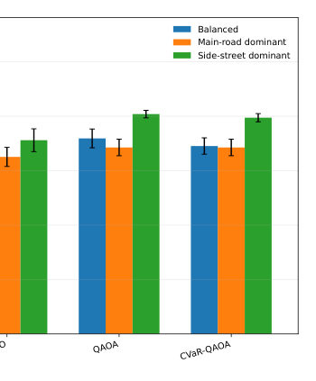
<figcaption class="paper-figure-caption"><b>Fig 1.</b> Fig. 1. Emergency-vehicle travel time for each controller under the three traffic-demand regimes. Error bars show 95% confidence intervals.</figcaption>
</figure>
<figure class="paper-figure-card">
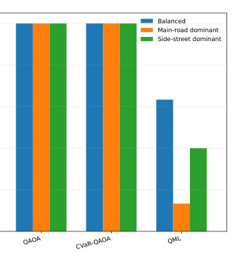
<figcaption class="paper-figure-caption"><b>Fig 2.</b> Fig. 2. Emergency-vehicle completion rate for each controller under the three traffic- demand regimes.</figcaption>
</figure>
<figure class="paper-figure-card">

<figcaption class="paper-figure-caption"><b>Fig 3.</b> Fig. 3. Cumulative traffic-delay proxy for each controller under the three traffic- demand regimes. Error bars show 95% confidence intervals.</figcaption>
</figure>
<figure class="paper-figure-card">

<figcaption class="paper-figure-caption"><b>Fig 4.</b> Fig. 4. Emergency-vehicle travel time as a function of the emergency-priority weight λem under balanced demand. Error bars show 95% confidence intervals.</figcaption>
</figure>
<figure class="paper-figure-card">

<figcaption class="paper-figure-caption"><b>Fig 5.</b> Fig. 5. Cumulative traffic-delay proxy as a function of the emergency-priority weight λem under balanced demand. Error bars show 95% confidence intervals.</figcaption>
</figure>
</div>

<p><strong>Summary.</strong> This work tackles emergency-priority traffic control by formulating it as a QUBO optimization problem solved using hybrid quantum-classical methods. It compares the performance of QAOA and CVaR-QAOA against classical baselines across various traffic demands. The study highlights that while quantum solvers improve the mathematical solution fidelity, the practical impact on closed-loop traffic performance is limited by the surrogate nature of the objective function.</p>
<p><strong>Why it may be interesting.</strong> The paper provides a concrete, complex optimization benchmark for quantum algorithms (QAOA/CVaR-QAOA) applied to a real-world control problem, allowing for direct comparison of quantum solver fidelity against classical optima.</p>
<details>
<summary>Detailed structure</summary>
<p><strong>Main problem.</strong> The paper addresses the complex optimization problem of coordinating traffic signals to prioritize emergency vehicles while minimizing disruption to regular traffic flow.</p>
<p><strong>Main result.</strong> CVaR-QAOA demonstrated superior accuracy in solving the underlying QUBO formulation compared to standard QAOA, although the resulting improvements in real-world traffic performance were minor.</p>
<p><strong>Method.</strong> The study employs a hybrid quantum-classical approach, formulating the traffic control problem as a finite-horizon QUBO, and comparing solutions derived from Exact QUBO, QAOA, CVaR-QAOA, and QML policies.</p>
<p><strong>Model / system.</strong> The system is a signalized corridor with $N$ intersections, modeled using queue lengths for main and side roads. The optimization is formulated as a QUBO, which is mapped to an Ising Hamiltonian suitable for quantum annealers or gate-based quantum algorithms.</p>
<p><strong>Key observables.</strong> Emergency-vehicle delay, ordinary-traffic delay/congestion, Mean QUBO optimality gap, Exact-QUBO solution hit rate, and First-action agreement.</p>
<p><strong>Important parameters / regimes.</strong> Three traffic-demand regimes (balanced, main-road-dominant, side-street-dominant), and the emergency-priority weight ($\lambda_{em}$).</p>
<p><strong>Assumptions / limitations.</strong> The QUBO objective function is treated as a finite-horizon surrogate for the true cumulative traffic objective, and the controller only applies the first optimized action at each step.</p>
<p><strong>Figures summary.</strong> Figures compare the mean QUBO optimality gap, exact-QUBO solution hit rate, and first-action agreement across different demand regimes for various quantum and classical controllers.</p>
<p><strong>Paper structure.</strong> The paper introduces the traffic control problem, formulates it as a QUBO, details the comparison between classical (Max-pressure) and quantum (QAOA, CVaR-QAOA) solvers, and evaluates performance across multiple demand regimes.</p>
</details>
<details>
<summary>Abstract</summary>
<p>Emergency-priority traffic signal control requires reducing emergency-vehicle delay while limiting disruption to ordinary traffic. This work investigates a finite-horizon QUBO formulation and compares Exact QUBO optimization, QAOA, CVaR-QAOA, a quantum machine-learning policy, fixed-time control, and max-pressure control in a three-intersection corridor. The study evaluates three traffic-demand regimes, examines the effect of the emergency-priority weight, and compares quantum solutions with the exact QUBO optimum. The optimization-based controllers achieved reliable emergency progression across all tested demand regimes, while max-pressure produced lower ordinary-traffic delay. Increasing emergency priority reduced emergency travel time but increased congestion, with diminishing improvements at larger weights. CVaR-QAOA reproduced the exact QUBO solution more accurately than standard QAOA, although the resulting differences in closed-loop traffic performance were comparatively small.</p>
</details>
<p><sub><a href="#top">↑ back to top</a></sub></p>

<p><a id="paper-2610.20790"></a></p>
<h3 id="infinite-magic-and-the-emergence-of-the-continuum"><a href="http://arxiv.org/abs/2610.20790v1">Infinite magic and the emergence of the continuum</a></h3>
<p><strong>Authors:</strong> Leo Shaposhnik, Lorenzo Leone, Lennart Bittel, Dimitris Saraidaris, Alexander Jahn, Jens Eisert<br>
<strong>Type:</strong> theory · <strong>Category:</strong> other · <strong>PDF:</strong> <a href="https://arxiv.org/pdf/2610.20790v1">https://arxiv.org/pdf/2610.20790v1</a><br>
<strong>Analysis basis:</strong> full PDF text, analyzed in chunks
<strong>Topic relevance:</strong> <code>analog quantum simulation</code> <strong>1/5</strong></p>
<div class="figure-strip-hint">↔ Scroll figures horizontally</div>
<div class="paper-figures-scroll">
<figure class="paper-figure-card">

<figcaption class="paper-figure-caption"><b>Fig 1.</b> Figure 1. Visualization of a stabilizer system. The support of indi- vidual stabilizers is indicated by blue ellipses.</figcaption>
</figure>
<figure class="paper-figure-card">

<figcaption class="paper-figure-caption"><b>Fig 2.</b> Figure 4. Visualization of a stabilizer system inducing long-range order.</figcaption>
</figure>
<figure class="paper-figure-card">

<figcaption class="paper-figure-caption"><b>Fig 3.</b> Figure 5. An example of two XX-type stabilizers s1, s2, both of which are not supported in Γ but whose product is localized in Γ and thus contributes to the local stabilizer group of the region Γ.</figcaption>
</figure>
</div>

<p><strong>Summary.</strong> This work connects the emergence of relativistic Quantum Field Theories from lattice models to the quantum information resource known as 'magic.' It proves that while simple stabilizer systems cannot support QFT, the appearance of the necessary type III factor requires an infinite amount of 'magic' in the underlying quantum state structure.</p>
<p><strong>Why it may be interesting.</strong> It provides a rigorous, information-theoretic criterion for the emergence of continuous spacetime structures (QFT) from discrete quantum systems, linking fundamental concepts in quantum information to high-energy physics.</p>
<details>
<summary>Detailed structure</summary>
<p><strong>Main problem.</strong> The paper seeks to establish the necessary quantum-information-theoretic conditions for a relativistic Quantum Field Theory (QFT) to emerge from a discrete lattice system.</p>
<p><strong>Main result.</strong> The emergence of a type III factor, characteristic of QFT, requires the presence of 'infinite magic' (divergence of the min-relative entropy of magic) when starting from hyperfinite lattice algebras.</p>
<p><strong>Method.</strong> The authors use advanced techniques from operator algebras (Von Neumann algebras), quantum information theory (nonstabilizerness/magic), and the study of infinite tensor products.</p>
<p><strong>Model / system.</strong> The analysis focuses on local algebras derived from stabilizer systems on a lattice, which serve as a model for quantum states on a discrete spacetime structure.</p>
<p><strong>Key observables.</strong> The type of the local von Neumann algebra (Type I, II, or III factor) and the quantum information resource called 'magic' (quantified by min-relative entropy).</p>
<p><strong>Important parameters / regimes.</strong> The divergence of the locally optimized min-relative entropy of magic, which signals the transition to a type III factor.</p>
<p><strong>Assumptions / limitations.</strong> The analysis relies on establishing quantitative equivalences between algebraic structure (Type III) and information-theoretic properties (infinite magic) in specific mathematical settings.</p>
<p><strong>Figures summary.</strong> Not specified, but the notes reference mathematical equations defining structures like local algebras and entropy calculations.</p>
<p><strong>Paper structure.</strong> The paper proceeds by first analyzing the constraints imposed by stabilizer systems (showing they preclude type III factors) and then tackling the general case using hyperfinite factors, establishing the necessary and sufficient condition linking type III structure to the divergence of magic.</p>
</details>
<details>
<summary>Abstract</summary>
<p>Which features of a quantum state are needed for a relativistic quantum field theory to emerge from a lattice system? We address this question by establishing a quantitative relationship between the type classification of hyperfinite von Neumann algebras and the quantum-information-theoretic resource of nonstabilizerness, also called magic. Our results establish two complementary parts of this relationship. First, we prove that any stabilizer system on a lattice defines a canonical GNS Hilbert space in which local von Neumann algebras do not contain type III factors in their central decomposition. As an explicit example, we prove that for stabilizer systems with short-range order, the local algebras are isomorphic to tensor products of hyperfinite factors of type I or type II. This demonstrates that the absence of magic is accompanied by the absence of type III factors in the local algebras, therefore prohibiting the appearance of a quantum field theory. Second, for the hyperfinite factors of Araki, Woods and Powers, we prove a quantitative equivalence: The limiting factor is of type III if and only if the locally optimized min-relative entropy of magic diverges. This divergence is necessary to generate the continuous spectrum associated to a type III factor. Thus, in this setting, the emergence of a type III factor requires not merely the presence of magic, but an infinite amount of it. These results provide a rigorous setting supporting the proposal that infinite magic is a necessary structural ingredient for the emergence of a relativistic continuum from lattice systems.</p>
</details>
<p><sub><a href="#top">↑ back to top</a></sub></p>

<p><a id="paper-2610.22315"></a></p>
<h3 id="magna-simulating-magic-state-factories-as-cheaply-as-clifford-circuits"><a href="http://arxiv.org/abs/2610.22315v1">Magna: simulating magic state factories as cheaply as Clifford circuits</a></h3>
<p><strong>Authors:</strong> Yifei Wang, Yingfei Gu<br>
<strong>Type:</strong> theory · <strong>Category:</strong> quantum information and computing · <strong>PDF:</strong> <a href="https://arxiv.org/pdf/2610.22315v1">https://arxiv.org/pdf/2610.22315v1</a><br>
<strong>Analysis basis:</strong> full PDF text, analyzed in chunks
<strong>Topic relevance:</strong> <code>methods for driven-dissipative</code> <strong>1/5</strong></p>
<div class="figure-strip-hint">↔ Scroll figures horizontally</div>
<div class="paper-figures-scroll">
<figure class="paper-figure-card">

<figcaption class="paper-figure-caption"><b>Fig 1.</b> FIG. 2. Nonlinear rules and causal history sampling. (a) A Clifford gate Cff controlled by a nonlinear function f of earlier outcomes m becomes a fixed controlled-Cff gate whose control is a virtual qubit, which is prepared in |0⟩, receives the Pauli insertion Xf(m), and is then traced (top). A nonlinear acceptance condition becomes the same insertion on a virtual qubit that the acceptance and fidelity networks project onto |1⟩(bottom). (b) The sampling network joins the rewritten protocol P to its conjugate P, traces the output, postselection, and irrelevant legs (colors as in Fig. 1), and fixes all sampling legs to the outcomes mj (triangles). Each half is drawn as a staircase whose...</figcaption>
</figure>
<figure class="paper-figure-card">

<figcaption class="paper-figure-caption"><b>Fig 2.</b> FIG. 3. High-throughput magic state distillation. (a) Joint infidelity of the k outputs for k = 2, 6, 10, with independent Z errors on the input magic states and otherwise ideal operations. Lines show the exact theoretical predictions, and markers show our Monte Carlo estimates with pointwise 1.96-standard-error intervals. Each marker is an independent batch of 65 536 importance-sampled draws from a proposal that raises the error probability of every input from p to 2/(3k+8). (b) Preparation time (circles) and sampling time per draw (triangles) at p = 10−3 up to k = 100, for the distillation circuit and for a matched Clifford circuit. Markers show medians over repeated runs, with bars...</figcaption>
</figure>
<figure class="paper-figure-card">

<figcaption class="paper-figure-caption"><b>Fig 3.</b> FIG. 4. Magic state cultivation on the color code (Color) and the RP2 surface code at d = 3, 5. (a) Acceptance rate and (b) output infidelity of accepted runs, under the uniform depolarizing noise model of strength p of Ref. [4]. Stars are published values: Ref. [4] for Color d = 3 and Ref. [28] for Color d = 5, joined by dotted lines. Bars are pointwise 1.96-standard-error intervals. At each rate, the acceptance rate is the mean over 224 draws from the physical fault distribution. The accepted-failure probability is estimated from an independent batch of 222 draws at d = 3 and 227 at d = 5, by importance sampling from a proposal that raises the probability of each of the N fault locations...</figcaption>
</figure>
<figure class="paper-figure-card">

<figcaption class="paper-figure-caption"><b>Fig 4.</b> FIG. 5. Logical-level 15-to-1 distillation on six distance-three surface-code patches, with fifteen stages of decoder-controlled feedforward and a final decoder-controlled postselection. (a) Acceptance rate and (b) infidelity of the accepted encoded output, as functions of the depolarizing probability p on the data qubits of each encoded input T state. Curves are the exact predictions of Eq. (11). Markers show the simulation of the full physical circuit with 16 384 importance-sampled draws with one-standard- error bars. For each patch, the proposal assigns probability 0.2 to a nonidentity residual logical class, split among X, Y , and Z in their physical proportions at p = 10−2, and draws...</figcaption>
</figure>
</div>

<p><strong>Summary.</strong> This paper presents 'magna,' a novel classical simulator designed to overcome the exponential complexity barrier in simulating magic state factories. By mapping protocol performance metrics to tensor networks and applying global algebraic reductions, it efficiently calculates acceptance rates and fidelities for complex quantum error correction protocols. This tool significantly accelerates the optimization and evaluation of large-scale quantum computation architectures.</p>
<p><strong>Why it may be interesting.</strong> It provides a powerful, scalable tool for analyzing the resource requirements of fault-tolerant quantum computation, which is crucial for designing practical quantum hardware.</p>
<details>
<summary>Detailed structure</summary>
<p><strong>Main problem.</strong> Classically simulating magic state factories, which involve complex non-Clifford operations like distillation and cultivation, is computationally challenging due to their non-Clifford content.</p>
<p><strong>Main result.</strong> The authors introduce 'magna,' a simulator that efficiently evaluates these protocols by reducing the simulation cost to depend only on the non-Clifford content, achieving state-of-the-art speedups.</p>
<p><strong>Method.</strong> The simulator models the figures of merit (acceptance rate and fidelity) as tensor networks, which are then globally reduced by exploiting structural correspondences with transversal gates on quantum codes.</p>
<p><strong>Model / system.</strong> The work focuses on fault-tolerant quantum computation using quantum error-correcting codes (e.g., color code, RP2 surface code) to generate magic states via protocols like distillation and cultivation.</p>
<p><strong>Key observables.</strong> Acceptance rate, output fidelity, and the simulation cost (measured by representation rank or sampling time).</p>
<p><strong>Important parameters / regimes.</strong> Distance of the code (e.g., $d=5$), number of output magic states (up to 100), and the physical error rate ($p$).</p>
<p><strong>Assumptions / limitations.</strong> The method assumes that only the acceptance rate and output fidelity are needed, allowing intermediate states to be bypassed during the simulation.</p>
<p><strong>Figures summary.</strong> Figures illustrate the simulation workflow, showing how protocol circuits are mapped to tensors and how the network is contracted to estimate performance metrics for various codes and distillation rounds.</p>
<p><strong>Paper structure.</strong> The paper introduces the simulator, details the mathematical reduction process using global network algebra, demonstrates its capability by simulating complex protocols (like 15-round distillation), and compares its performance against existing state-of-the-art simulators.</p>
</details>
<details>
<summary>Abstract</summary>
<p>Classical simulation of magic state factories, including distillation, cultivation, and code switching, is challenging because of their substantial non-Clifford content. We introduce $\texttt{magna}$ (magic-state-factory assessment via global network algebra), a classical simulator that simulates such protocols as cheaply as Clifford circuits. $\texttt{magna}$ expresses the figures of merit of a protocol, namely the acceptance rate and the fidelity of the accepted states, as tensor networks, which it reduces globally by exploiting a structural correspondence with transversal gates on quantum codes. $\texttt{magna}$ further supports feedforward conditioned on arbitrary functions of mid-circuit measurement outcomes, including decoder outputs. We simulate Bravyi--Haah distillation with up to 100 output magic states at a cost that does not grow exponentially in the number of outputs, and achieve state-of-the-art sampling times for distance-5 magic state cultivation on both color codes and RP$^2$ surface codes. Finally, we validate nonlinear feedforward on a logical-level distillation protocol with 15 rounds of decoder-dependent feedforward. $\texttt{magna}$ aims to contribute to the key infrastructure for the large-scale evaluation and optimization of magic state factories.</p>
</details>
<p><sub><a href="#top">↑ back to top</a></sub></p>

<p><a id="paper-2610.21154"></a></p>
<h3 id="modified-anisotropy-and-distinct-phase-diagrams-in-the-nearly-isotropic-math875math-triangular-lattice-antiferromagnet-math876math"><a href="http://arxiv.org/abs/2610.21154v1">Modified anisotropy and distinct phase diagrams in the nearly isotropic $S=1$ triangular-lattice antiferromagnet $\mathrm{Rb_2Ni(SeO_3)_2}$</a></h3>
<p><strong>Authors:</strong> Xuejuan Gui, Xu-Guang Zhou, Chen Zhang, Zhongcen Sun, Yuan Sun, Chenglin Shang, Akira Matsuo, Yasuhiro H. Matsuda, Koichi Kindo, Henrik M. Rønnow, Weiqiang Yu, Rong Yu, Peng Cheng, Juanjuan Liu, Jieming Sheng, Jinchen Wang<br>
<strong>Type:</strong> experiment · <strong>Category:</strong> strongly correlated electrons · <strong>PDF:</strong> <a href="https://arxiv.org/pdf/2610.21154v1">https://arxiv.org/pdf/2610.21154v1</a><br>
<strong>Analysis basis:</strong> full PDF text, analyzed in chunks
<strong>Topic relevance:</strong> <code>analog quantum simulation</code> <strong>1/5</strong></p>
<div class="figure-strip-hint">↔ Scroll figures horizontally</div>
<div class="paper-figures-scroll">
<figure class="paper-figure-card">

<figcaption class="paper-figure-caption"><b>Fig 1.</b> FIG. 1. (a) X-ray diffraction of the (00l) lattice planes. The inset shows a single crystal on millimeter-grid paper. (b–d) Crystal structure of Rb2Ni(SeO3)2 and its triangular network. The ions, bond angles of the NiO6 octahedra, and intra- and interlayer Ni–Ni bond distances are indicated.</figcaption>
</figure>
<figure class="paper-figure-card">

<figcaption class="paper-figure-caption"><b>Fig 2.</b> FIG. 3. Pulsed high magnetic field magnetization (left axis) and dM/dH (right axis) measurement at 4.2 K for field applied in the ab (red) and c (black) directions. Measure- ments on the up- and down-sweeps agree thus only the up- sweep curves are shown. The absolute magnetization val- ues were calibrated using 0–14 T PPMS results. Low-field dM/dH data are omitted because of substantial measurement noise. Dashed lines mark the critical fields. Schematic three- sublattice spin configurations corresponding to Y, UUD and V phases are shown.</figcaption>
</figure>
<figure class="paper-figure-card">

<figcaption class="paper-figure-caption"><b>Fig 3.</b> FIG. 2. (a) Temperature dependence of the magnetic suscep- tibility χ (left axis) and the inverse susceptibility 1/(χ −χ0) (right axis) for magnetic fields applied parallel to the ab plane and the c axis. Here, χ0 denotes the temperature-independent contribution. The red solid lines represent Curie–Weiss fits performed over the temperature range 100–300 K. Zero-field- cooled (ZFC) and field-cooled (FC) measurements yield iden- tical results; therefore, only the FC data are shown. (b) Zero- field specific heat of Rb2Ni(SeO3)2. Arrows mark the transi- tion temperature.</figcaption>
</figure>
<figure class="paper-figure-card">

<figcaption class="paper-figure-caption"><b>Fig 4.</b> FIG. 4. (a) Out-of-plane (H ∥c) and (b) in-plane (H ∥ab) field dependent magnetization of Rb2Ni(SeO3)2 at T = 2 (in red) and 8 K (in black). Insets show the dM/dH curves with the same color coding.</figcaption>
</figure>
<figure class="paper-figure-card">

<figcaption class="paper-figure-caption"><b>Fig 5.</b> FIG. 5. Temperature dependence of the magnetic susceptibility for K2Ni(SeO3)2 (left panels) and Rb2Ni(SeO3)2 (right panels), with magnetic fields parallel to c axis in panels (a-b) and parallel to the ab plane in panels (c-d). The same color coding for the magnetic fields is used across all panels. Field-cooled (FC) and zero-field-cooled (ZFC) data are denoted by solid and open symbols, respectively, with no significant differences between them. Arrows mark the transition temperatures determined from dχ/dT .</figcaption>
</figure>
</div>

<p><strong>Summary.</strong> This work experimentally characterizes the magnetic anisotropy and phase diagram of the S=1 triangular-lattice antiferromagnet Rb2Ni(SeO3)2. By comparing it to a related compound, the authors demonstrate that the magnetic response is strongly dictated by the type of anisotropy, revealing distinct high-field transitions and magnetization plateaus. These findings underscore the critical role of anisotropy in determining exotic quantum magnetic phases.</p>
<p><strong>Why it may be interesting.</strong> The detailed study of field-induced phase transitions and the explicit role of competing anisotropies (single-ion vs. exchange) in a quasi-2D magnetic system is highly relevant to understanding quantum magnetism in correlated materials.</p>
<details>
<summary>Detailed structure</summary>
<p><strong>Main problem.</strong> The study investigates the modified magnetic anisotropy and resulting distinct magnetic phase diagrams in the nearly isotropic S=1 triangular-lattice antiferromagnet Rb2Ni(SeO3)2.</p>
<p><strong>Main result.</strong> The material exhibits easy-axis anisotropy (opposite to its analog K2Ni(SeO3)2), leading to a split Néel transition at high fields and distinct magnetization plateaus in both field directions.</p>
<p><strong>Method.</strong> The research combines single-crystal X-ray diffraction, magnetic susceptibility measurements, and pulsed high-field magnetization measurements up to 60 T.</p>
<p><strong>Model / system.</strong> The system is the S=1 triangular-lattice antiferromagnet Rb2Ni(SeO3)2, which is quasi-two-dimensional. The magnetic behavior is governed by the interplay between exchange anisotropy (Delta) and single-ion anisotropy (D).</p>
<p><strong>Key observables.</strong> Magnetic susceptibility ($\chi(T)$), Néel temperature ($T_N$), magnetization plateaus (e.g., 21 T to 37 T), and the anisotropy ratio $\chi_c / \chi_{ab}$.</p>
<p><strong>Important parameters / regimes.</strong> The anisotropy strength (easy-axis vs. easy-plane), the applied magnetic field strength (up to 60 T), and the temperature (e.g., 4.2 K).</p>
<p><strong>Assumptions / limitations.</strong> The analysis assumes that the magnetic phase behavior is highly sensitive to the relative strengths of single-ion and exchange anisotropies.</p>
<p><strong>Figures summary.</strong> Figures show X-ray diffraction data, temperature dependence of magnetic susceptibility ($\chi$) for different field orientations, and pulsed high-field magnetization ($M$ vs $H$) curves demonstrating plateaus and split transitions.</p>
<p><strong>Paper structure.</strong> The paper systematically compares the magnetic properties of Rb2Ni(SeO3)2 to its analog K2Ni(SeO3)2, detailing anisotropy measurements, high-field magnetization studies, and constructing distinct magnetic phase diagrams based on these experimental findings.</p>
</details>
<details>
<summary>Abstract</summary>
<p>The triangular-lattice antiferromagnet serves as a benchmark platform for realizing exotic quantum phases, in which magnetic anisotropy plays an essential role. In this work, we report modified magnetic anisotropy and phase diagrams in the nearly isotropic $S=1$ triangular-lattice antiferromagnet $\mathrm{Rb_2Ni(SeO_3)_2}$, compared with those of its isostructural analog $\mathrm{K_2Ni(SeO_3)_2}$. The magnetic susceptibility of $\mathrm{Rb_2Ni(SeO_3)_2}$ exhibits an easy-axis anisotropy with $g_c > g_{ab}$, opposite to the easy-plane anisotropy observed in $\mathrm{K_2Ni(SeO_3)_2}$. The single Néel transition observed at zero field splits into two transitions at around 10~T, and a magnetization plateau is observed between 21~T and 37~T for both out-of-plane ($H\parallel c$) and in-plane ($H\parallel ab$) field directions in $\mathrm{Rb_2Ni(SeO_3)_2}$. We construct magnetic phase diagrams that are distinct between $\mathrm{Rb_2Ni(SeO_3)_2}$ and $\mathrm{K_2Ni(SeO_3)_2}$. These findings highlight the sensitivity of field-induced magnetic phase behavior to anisotropy in nearly isotropic triangular-lattice antiferromagnets.</p>
</details>
<p><sub><a href="#top">↑ back to top</a></sub></p>

<p><a id="paper-2610.20694"></a></p>
<h3 id="quantum-partial-information-decompositions-an-operational-order-on-ensembles-and-direct-quantifications-of-objective-information"><a href="http://arxiv.org/abs/2610.20694v1">Quantum Partial Information Decompositions, an Operational Order on Ensembles, and Direct Quantifications of Objective Information</a></h3>
<p><strong>Authors:</strong> Alexander Nico-Katz<br>
<strong>Type:</strong> theory · <strong>Category:</strong> quantum information and computing · <strong>PDF:</strong> <a href="https://arxiv.org/pdf/2610.20694v1">https://arxiv.org/pdf/2610.20694v1</a><br>
<strong>Analysis basis:</strong> full PDF text, analyzed in chunks
<strong>Topic relevance:</strong> <code>quantum measurements</code> <strong>1/5</strong></p>
<div class="figure-strip-hint">↔ Scroll figures horizontally</div>
<div class="paper-figures-scroll">
<figure class="paper-figure-card">

<figcaption class="paper-figure-caption"><b>Fig 1.</b> FIG. 1. Schematics showing (a) the structure of three sets rel- evant to the set-theoretic construction of the PID framework, example elements of these sets are shown as nodes, and par- tial orderings under the relevant relation are shown as directed arrows (i.e. P ⊆Q as P →Q or β ≼α as β →α). (b) a pro- cedure by which one ensemble can be turned into another via quantum operations E and classical message aggregation G. (c) the ‘twisted parachute’ graph state, an anisotropic model displaying objective (fine-grained, redundant) information.</figcaption>
</figure>
<figure class="paper-figure-card">

<figcaption class="paper-figure-caption"><b>Fig 2.</b> FIG. 2. Processing-inferiority error ε for a variety of illustra- tive input (η) and output (µ) qubit ensembles, as a function of iterations (both G and E) of the see-saw SDP scheme. In- sets schematically show z-x Bloch planes corresponding to the ensembles studied in each panel, with the input, output, and optimal µopt ensembles superimposed. Forward results µ ≼p.i. η shown for three backend solvers (SCS, CLARABEL, and MOSEK), and additional inverse result η ≼p.i. µ shown for MOSEK. Exact details of the toy ensembles studied in each sub-panel (a)-(f) are given in Table II.</figcaption>
</figure>
<figure class="paper-figure-card">

<figcaption class="paper-figure-caption"><b>Fig 3.</b> FIG. 3. Processing-inferiority error ε (panels (a)-(c)) and Holevo quantity χ (panel (d)) landscapes for rA = rB = r and p = 1/2 planes of generic (2,2)-ensembles. Solving for the processing-inferior redundant capacity χ(2) ∩ involves simultaneous optimization over all landscapes. Superimposed markers identify the solution to this optimization problem for three indicative tolerances ε ≤10−10, 10−6, and 10−2.</figcaption>
</figure>
<figure class="paper-figure-card">

<figcaption class="paper-figure-caption"><b>Fig 4.</b> FIG. 4. Information atoms χ(1) ∂(α) resulting from the bipar- tite QPID using the minimum redundant capacity χ(1) ∩ as a function of environment fractions NA/N. Panels show all atoms for both weak ϕ = 0.05π and strong ϕ = 0.95π scram- bling; for (a) no twisting ∆= 0, and (b) twisting ∆= 0.1, respectively. Plateaux characteristic of quantum darwinism can be seen in the redundancy atom χ(1) ∂(α⊥).</figcaption>
</figure>
<figure class="paper-figure-card">

<figcaption class="paper-figure-caption"><b>Fig 5.</b> FIG. 5. Direct quantification of strong quantum darwinism using partial decomposition of the Holevo quantity via the processing-inferior redundant capacity χ(2) ∩(α⊥). Main panel shows χ(1) ∩(α⊥) and χ(2) ∩(α⊥) of the N = 12 twisted parachute state with finite encoding errors and twisting δθ = ∆= 0.1 for the lowest (maximally redundant) antichain α⊥as a func- tion of scrambling ϕ. Inset highlights low-scrambling region wherein the inequality Eq. (15) is strongest, illustrating how χ(1) ∩(α⊥) can over-estimate redundancy by conflating amount of information with information itself.</figcaption>
</figure>
</div>

<p><strong>Summary.</strong> This paper generalizes the Partial Information Decomposition (PID) framework to multipartite quantum systems, creating Quantum Partial Information Decompositions (QPIDs). By defining an operational partial order on quantum ensembles, the authors construct sophisticated QPIDs for quantities like the Holevo information. These tools allow for the systematic quantification of objective information in complex quantum states, establishing a new foundation for quantum information analysis.</p>
<p><strong>Why it may be interesting.</strong> It provides a rigorous, information-theoretic tool (QPIDs) to quantify structural redundancies and objective information in complex quantum multipartite systems, which is highly relevant for understanding quantum correlations beyond simple entanglement measures.</p>
<details>
<summary>Detailed structure</summary>
<p><strong>Main problem.</strong> The paper aims to extend the Partial Information Decomposition (PID) framework from classical to multipartite quantum systems (QPIDs) to systematically analyze the structure of quantum information.</p>
<p><strong>Main result.</strong> The authors construct a sophisticated QPID for the Holevo quantity based on an operational partial order on quantum ensembles, demonstrating its immediate applicability to quantifying objective information in extended graph states.</p>
<p><strong>Method.</strong> The core method involves developing a set-theoretic decomposition based on antichains of source subsets, coupled with defining an operational partial order on quantum ensembles via ensemble (inter-)convertibility.</p>
<p><strong>Model / system.</strong> The analysis is performed on multipartite quantum systems, using extended graph states (like the 'twisted parachute' state) as a concrete example to quantify objective information.</p>
<p><strong>Key observables.</strong> Quantum Partial Information Decompositions (QPIDs), the Holevo quantity, and the deviation $\Delta\chi^{(\alpha^{\perp})}$ quantifying the difference between naive and sophisticated redundancy estimates.</p>
<p><strong>Important parameters / regimes.</strong> Scrambling parameter $\phi \in [0, \pi]$, and system size $N$ (e.g., $N=8, 10, 12, 14$).</p>
<p><strong>Assumptions / limitations.</strong> The choice of the redundancy function $\chi_{\cap}(\alpha)$ is non-unique and problem-specific; the sophisticated QPID requires solving nested, non-convex optimization problems.</p>
<p><strong>Figures summary.</strong> Figures illustrate schematics of the PID set-theoretic construction, the ensemble conversion procedure, and show how the deviation $\Delta\chi^{(\alpha^{\perp})}$ scales with system size $N$ and scrambling $\phi$.</p>
<p><strong>Paper structure.</strong> The paper first introduces the general set-theoretic PID framework, then extends it to the quantum domain (QPIDs) using an operational partial order on ensembles. Finally, it applies these tools to quantify objective information in specific quantum states.</p>
</details>
<details>
<summary>Abstract</summary>
<p>The partial information decomposition (PID) framework is an extension of classical information theory that enables a systematic analysis of the structure of information in multipartite systems. We advance a simple extension of this framework enabling the construction of multipartite quantum PIDs (QPIDs); generalizing recent, exclusively bipartite, extensions. We construct two QPIDs of the Holevo quantity. First a naive QPID based on the classical minimum mutual information. Second a sophisticated QPID enabled by our development of an operational partial order on quantum ensembles in terms of ensemble (inter-)convertability. Finally, as a concrete example of how QPIDs can be applied, we investigate objectivity scenarios; using our Holevo QPIDs to directly quantify objective information in extended graph states. These findings ultimately establish a foundation upon which generic multipartite QPIDs can be systematically constructed, introduce an operational partial order on ensembles, advance QPIDs as interesting objects of study in their own right, and demonstrate their immediate applicability to problems in quantum information.</p>
</details>
<p><sub><a href="#top">↑ back to top</a></sub></p>

<p><a id="paper-2610.22357"></a></p>
<h3 id="stability-of-quantum-ldpc-states-under-local-pauli-noise"><a href="http://arxiv.org/abs/2610.22357v1">Stability of Quantum LDPC States under Local Pauli Noise</a></h3>
<p><strong>Authors:</strong> Tai-Hsuan Yang, Andrew D. Kim, Akash Vijay, Jong Yeon Lee<br>
<strong>Type:</strong> theory · <strong>Category:</strong> quantum information and computing · <strong>PDF:</strong> <a href="https://arxiv.org/pdf/2610.22357v1">https://arxiv.org/pdf/2610.22357v1</a><br>
<strong>Analysis basis:</strong> full PDF text, analyzed in chunks
<strong>Topic relevance:</strong> <code>correlated / nonlocal dissipation</code> <strong>1/5</strong></p>
<div class="figure-strip-hint">↔ Scroll figures horizontally</div>
<div class="paper-figures-scroll">
<figure class="paper-figure-card">

<figcaption class="paper-figure-caption"><b>Fig 1.</b> FIG. 1. Representative CMI partitions where B sep- arates A and C. (a) The disk-annulus tripartition for the Markov length. (b) The CMI partition for space-uniformity. (c) The Levin–Wen partition for topological entropy. For higher dimensions, one replace disks in the figure by balls.</figcaption>
</figure>
<figure class="paper-figure-card">

<figcaption class="paper-figure-caption"><b>Fig 2.</b> FIG. 2. Rigorous exponential CMI decay of the toric code. Under X-dephasing with probability p, the error- cluster bound (orange) applies for p &lt; pEC, where pEC solves 6 p</figcaption>
</figure>
<figure class="paper-figure-card">

<figcaption class="paper-figure-caption"><b>Fig 3.</b> FIG. 4. Spatial deformation of the Levin–Wen partition. (a) In σ = NQ(ρ0), deform the annulus from G0 in the clean region Q to Gm outside Q. (b) Apply the remaining noise on Q, leaving the reduced state on Gm unchanged, then reverse the deformation in ρ. Pink shading indicates applied noise; the gradient is schematic.</figcaption>
</figure>
<figure class="paper-figure-card">

<figcaption class="paper-figure-caption"><b>Fig 4.</b> FIG. 5. Block construction and reverse-order implementation of the quasi-local Petz decoder. (a) At a fixed layer s, where Js indexes the blocks in that layer, the noise support is decomposed as a (disjoint) union of non-overlapping blocks: A(s) = F</figcaption>
</figure>
</div>

<p><strong>Summary.</strong> This work establishes a general criterion for the stability of quantum error-correcting codes by analyzing the decay of the Conditional Mutual Information (CMI) under local Pauli noise. The authors prove exponential decay of CMI across any separating region in both weak and strong noise limits. This result is significant because it provides a robust, quantifiable measure of information preservation in complex quantum many-body systems.</p>
<p><strong>Why it may be interesting.</strong> The use of CMI decay as a general, quantifiable criterion for mixed-state phase stability provides a powerful tool applicable beyond standard ground-state gap arguments in quantum many-body physics.</p>
<details>
<summary>Detailed structure</summary>
<p><strong>Main problem.</strong> The paper investigates the stability of the canonical mixed state of Quantum LDPC codes under local Pauli noise.</p>
<p><strong>Main result.</strong> It proves that the Conditional Mutual Information (CMI) decays exponentially with the width of any separating buffer in both weak and strong noise regimes.</p>
<p><strong>Method.</strong> The analysis uses the CMI as a diagnostic tool, deriving bounds through techniques analogous to error-cluster arguments and information-percolation inequalities.</p>
<p><strong>Model / system.</strong> The system is based on Quantum Low-Density Parity-Check (qLDPC) codes defined on a lattice, whose canonical mixed state is the normalized projector onto the code space. Noise is modeled by local Pauli channels.</p>
<p><strong>Key observables.</strong> Conditional Mutual Information (CMI), $I(A:C|B)$, and the exponential decay rate of this quantity.</p>
<p><strong>Important parameters / regimes.</strong> Noise strength ($p$), system size ($n$), and the separation distance across the buffer ($B$).</p>
<p><strong>Assumptions / limitations.</strong> The results are rigorously established for full-system tripartitions, and some parts require additional assumptions like space-uniformity or local-normalizer completeness.</p>
<p><strong>Figures summary.</strong> Figures illustrate CMI partitions ($A \sqcup B \sqcup C$), show the rigorous exponential CMI decay for the Toric Code under X-dephasing, and depict the geometry of deformations and the Petz recovery map construction.</p>
<p><strong>Paper structure.</strong> The paper establishes the CMI decay bound in two complementary regimes (weak and strong noise) using different mathematical tools, and concludes by applying these bounds to construct a quasi-local Petz recovery channel.</p>
</details>
<details>
<summary>Abstract</summary>
<p>Quantum low-density parity-check (qLDPC) codes have a canonical mixed state---the normalized projector onto the code space---that lies at the intersection of quantum error correction and quantum many-body physics, yet the stability of its information-theoretic structure under local noise remains poorly understood. Recent progress on mixed-state phases of matter has identified the spatial decay of conditional mutual information (CMI) $I(A:C|B)$ as a key diagnostic of such stability, analogous to the role of the spectral gap for quantum ground states. We prove that, for the normalized code-projector state of a $\mathbb{Z}_d$ qLDPC stabilizer code under local Pauli noise, the CMI across a buffer $B$ separating $A$ from $C$ decays exponentially with the width of $B$ in two complementary noise regimes independent of system size. At weak noise, this holds for full-system tripartitions, where correlations between the two sides require an error cluster to cross the buffer, an exponentially unlikely event. At strong noise, exponential decay holds whenever the buffer supports no logical operator, since correlations can persist only along rare chains of buffer qudits that remain informative. Under an additional space-uniformity assumption, we establish the robustness of Levin--Wen topological entropy. On finite-dimensional lattices of size $n$, the weak-noise bound further implies a constant-layer quasi-local Petz recovery channel of range $O(\poly(\log n)/\varepsilon)$ that recovers the noiseless state within trace-distance error $\varepsilon$. Both CMI bounds apply to general qLDPC interaction graphs, including geometries where such constant-depth quasi-local recovery need not exist. Thus, the exponential decay of the noise-induced CMI provides a general criterion for mixed-state phase stability.</p>
</details>
<p><sub><a href="#top">↑ back to top</a></sub></p>

<p><a id="paper-2610.22275"></a></p>
<h3 id="syndebug-a-framework-to-debug-logic-bugs-in-fault-tolerant-quantum-computing-programs"><a href="http://arxiv.org/abs/2610.22275v1">SynDebug: A Framework to Debug Logic Bugs in Fault-Tolerant Quantum Computing Programs</a></h3>
<p><strong>Authors:</strong> Nicholas S. DiBrita, Jack Lange, Tirthak Patel<br>
<strong>Type:</strong> theory · <strong>Category:</strong> quantum information and computing · <strong>PDF:</strong> <a href="https://arxiv.org/pdf/2610.22275v1">https://arxiv.org/pdf/2610.22275v1</a><br>
<strong>Analysis basis:</strong> full PDF text, analyzed in chunks
<strong>Topic relevance:</strong> <code>quantum measurements</code> <strong>1/5</strong></p>
<div class="figure-strip-hint">↔ Scroll figures horizontally</div>
<div class="paper-figures-scroll">
<figure class="paper-figure-card">

<figcaption class="paper-figure-caption"><b>Fig 1.</b> Figure 1. SynDebug is a systems-level framework for debug- ging fault-tolerant quantum computing programs.</figcaption>
</figure>
<figure class="paper-figure-card">

<figcaption class="paper-figure-caption"><b>Fig 2.</b> Figure 2. Layout of an example QEC patch. This figure shows the distance-3 [[9, 1, 3]] rotated surface code.</figcaption>
</figure>
<figure class="paper-figure-card">

<figcaption class="paper-figure-caption"><b>Fig 3.</b> Figure 4. A simple logical two-qubit quantum circuit can become complex with the physical FTQC implementation. In this example, a Bell-pair circuit is implemented with a distance-3 surface code: [[9, 1, 3]]. While the specific gates and qubits in the physical circuit are illegible, the visual demonstrates its size and complexity.</figcaption>
</figure>
<figure class="paper-figure-card">

<figcaption class="paper-figure-caption"><b>Fig 4.</b> Figure 5. SynDebug embeds lightweight debugging assertions directly into FTQC execution flows while integrating with existing FTQC compilation, QEC, and runtime infrastructures, remaining generalizable across multiple hardware technologies.</figcaption>
</figure>
<figure class="paper-figure-card">

<figcaption class="paper-figure-caption"><b>Fig 5.</b> Figure 6 provides an overview of the design components of SynDebug. Guided by practical and scalable requirements, SynDebug introduces three lightweight assertion primitives to debug fault-tolerant programs, (1) assert_classical, (2) assert_ superposition, and (3) assert_entanglement, for validating logical state preparation, superposition struc- ture, and entanglement relationships within FTQC execu- tions. The framework is designed at the stabilizer-code ab- straction level to remain compatible with diverse QEC method- ologies while avoiding additional qubit overhead and mini- mizing the execution cost of debugging.</figcaption>
</figure>
</div>

<p><strong>Summary.</strong> This paper presents SynDebug, a pioneering systems-level framework designed to debug complex Fault-Tolerant Quantum Computing (FTQC) programs. It addresses the challenge that existing debuggers cannot handle the overhead of Quantum Error Correction (QEC). By embedding lightweight assertions directly into the encoded execution flow, SynDebug proves that practical, low-overhead debugging for large-scale quantum computation is achievable.</p>
<p><strong>Why it may be interesting.</strong> While focused on quantum computation, the rigorous development of systematic debugging tools is crucial for any physical platform (like trapped ions or superconducting qubits) aiming for fault tolerance, providing a software engineering blueprint for hardware realization.</p>
<details>
<summary>Detailed structure</summary>
<p><strong>Main problem.</strong> Debugging Fault-Tolerant Quantum Computing (FTQC) programs is extremely difficult due to the complex, multi-layered nature of Quantum Error Correction (QEC) overhead.</p>
<p><strong>Main result.</strong> The authors introduce SynDebug, a novel systems-level framework that enables practical debugging of FTQC programs with minimal overhead (average 1.8% circuit depth increase) and no measurable increase in logical error rate.</p>
<p><strong>Method.</strong> SynDebug implements lightweight, assertion-based debugging primitives (e.g., checking classical states or entanglement) that operate directly within the encoded FTQC execution flow, avoiding the need to simulate the entire physical state.</p>
<p><strong>Model / system.</strong> The system modeled is a general FTQC architecture utilizing QEC codes (like the surface code) to protect logical qubits. The process involves translating high-level logical circuits into complex physical circuits involving syndrome extraction and error correction.</p>
<p><strong>Key observables.</strong> Logical state correctness, superposition structure, entanglement relationships, and the measured logical error rate.</p>
<p><strong>Important parameters / regimes.</strong> Code distance ($d$), number of physical qubits ($n$), and the overhead percentage (e.g., 1.8% circuit depth).</p>
<p><strong>Assumptions / limitations.</strong> The framework assumes that measuring certain observables (like those used in assertions) does not fundamentally alter the state in a way that invalidates the bug check, and that the overhead remains low across various QEC codes.</p>
<p><strong>Figures summary.</strong> Figures illustrate SynDebug's workflow across the FTQC stack, show the physical layout and measurement checks (X-check/Z-check) for an example QEC patch, and compare logical vs. physical circuit expansions.</p>
<p><strong>Paper structure.</strong> The paper first establishes the difficulty of debugging FTQC due to QEC complexity. It then introduces SynDebug, detailing its lightweight, assertion-based primitives. The methodology is validated by applying these assertions to complex algorithms like Shor's, culminating in performance measurements demonstrating feasibility.</p>
</details>
<details>
<summary>Abstract</summary>
<p>Fault-tolerant quantum computing (FTQC) introduces substantial systems-level complexity through quantum error correction (QEC), making debugging FTQC programs challenging. Existing quantum debugging approaches primarily target logical-level circuits and do not naturally support debugging within realistic FTQC execution flows. We present SynDebug, the first systems-level debugging framework for FTQC programs. SynDebug introduces lightweight assertion-based debugging primitives that operate directly within encoded FTQC infrastructures while avoiding additional logical surface area and minimizing temporal overhead. We evaluate SynDebug across multiple QEC code families, code distances, and encoded workloads, including state preparation, entanglement validation, and Shor-style programs. Our results demonstrate that SynDebug enables practical FTQC debugging with an average 1.8% additional circuit depth overhead (0% in most cases) and no measurable increase in the logical error rate, showing that systems-level debugging for large-scale FTQC applications is both feasible and practical.</p>
</details>
<p><sub><a href="#top">↑ back to top</a></sub></p>
<hr>
<p>
<a href="index.html">← Index</a>
 · <a href="papers_04.html">← Previous</a> · <a href="papers_06.html">Next →</a>
</p>
<hr>

</body>
</html>
